October 1929.
THE last paragraph of the editorial of the July number of The Tropical Agriculturist promised the early publication of the report of the Economic Botanist of the Department of Agriculture on the present position of bud-grafting and seed selection of rubber in the East. The report in question, which is part of a larger report by Mr. Lord on his recent tour in Malaya, Indo-China and the Dutch East Indies, is published in the present number and no apology is necessary for drawing attention to it or for returning to the subject of rubber budding and seed selection. The report gives an account of the work in hand in the East and of the developments that have followed or are expected to follow the progress that has been made, and it also points out the significance of these developments. It is therefore worthy of the close study of the Ceylon rubber planter and it is hoped that it will emphasise the appeal made in the editorial of four months ago.
Attention may be directed to the section of the report which discusses an agricultural and botanical programme of rubber research for Ceylon. It is clear that work of an urgent nature is waiting to be done, and it is to be hoped that the means of carrying it out will be forthcoming. Three parties are concerned, the rubber grower, the Department of Agriculture and the Rubber Research Scheme, and it is necessary for each to do a share.
It behoves the local grower of rubber to take steps to find his highest-yielding trees and to select from them the mother-trees to be used for bud-grafting. The procedure to be followed in the
194selection of mother-trees on the final basis of their yields of dry rubber over a full tapping season has been laid down and has been approved by the Estate Products Committee of the Board of Agriculture. For general information it will be embodied in a leaflet. The Department of Agriculture and the Rubber Research Scheme are prepared to assist in the work of choosing mother-trees; in fact, it is advisable that possible mother-trees should be inspected in the field before they are chosen for yield tests and that they should be inspected at intervals during the progress of the yield tests. As it is impossible to test the budded progeny of all local mother-trees on experimental stations, much work will have to be done on estates. The laying out of tests of bud-grafts on estates must be done in a scientific and not in a haphazard manner, and it is felt that the Department of Agriculture and the Rubber Research Scheme should be prepared to advise when called upon. It has also been decided that, when supervision of estate tests of clones of bud-grafts is exercised, the Department of Agriculture or the Rubber Research Scheme should publish the results of test tappings for general information. Bud-grafting work should be supplemented by seed selection work and both should lead up to the provision of improved material for rejuvenation of old areas of rubber; here again the Department of Agriculture and the Rubber Research Scheme should be of assistance to the grower.
On their part the Department and the Rubber Research Scheme are preparing to carry out tests of the budded progeny of certain local mother-trees and investigation of the influence of stock on scion. The Department of Agriculture has also undertaken tests of imported Eastern clones and rejuvenation and manurial experiments. The conditions under which clones will be tested on experimental stations have been laid down and provision has been made for the supply of improved material to small-holders who may wish to have it.
It is clear that the work outlined above will more than occupy the time of the very few officers of the Department of Agriculture and the Rubber Research Scheme who are available for it, and it follows that, if the work is to be pursued with energy and if the further lines of research which are discussed in Mr. Lord's report are to be taken up, as it is necessary they should be taken up, more men, land and a greater expenditure of money are required. The problem is before us and a plan of campaign is ready. The organisation which is best suited to take charge of the work and carry it to a successful conclusion is a new and enlarged Rubber Research Scheme which will embrace all the rubber growers in the Island. It may as well be admitted that in rubber research Ceylon lags behind her contemporaries, and it is to be hoped that she will be given an early opportunity of enlarging her activities.
195IN May 1928 the then Director of Agriculture in Ceylon, Mr. F. A. Stockdale, C.B.E., suggested that I should visit Malaya, Indo-China and Java in order to inspect the methods in use in those countries for improving rice cultivation, particularly those methods concerned with the selection and distribution of pure-line or pedigree seed. An itinerary was prepared which entailed an absence from Ceylon of about six weeks. Early in 1929 it was decided to ask for permission for an officer of the Department of Agriculture to attend the Fourth Pacific Science Congress to be held at Bandoeng in Java from the 18th to 24th May 1929. The necessary invitation was received and Government approved of my representing the Department.
Previous to this Dr. O. de Vries, Director of the Rubber Proefstation in Java, had arranged for a rubber conference to be held at Buitenzorg immediately prior to the meetings of the Congress and had requested that officers of the Ceylon Rubber Research Scheme should attend. As one of the chief aims of the Conference was to arrive at standardised methods of testing plantation rubber, Mr. G. Martin of the London staff of the Ceylon Rubber Research Scheme, who is responsible for such tests of Ceylon rubber, was delegated to attend.
Dr. de Vries, however, desired that in addition an officer of the Scheme from Ceylon should be sent. Owing to the financial position of the Scheme this was not considered possible, but it was suggested that as I was to attend the Congress it would entail little additional expense if I were to attend the Conference also. At the same time it was suggested that I should spend the time between the completion of inspecting the work on rice in Java (about the middle of April) and the start of the Rubber Conference (5th. May) in investigating the present position of bud-grafting and seed selection with Hevea in the Dutch East Indies. Government approved of these suggestions and the estimated additional expenses were met by a donation from the Rubber Research Scheme of Rs. 750-00 and a vote of a similar amount from the Finance Committee.
* Part of the report of Mr. L. Lord, M.A., Economic Botanist of the Department of Agriculture, Ceylon, on his recent tour in the East. Other parts of the report will be published at an early date.—Ed., T.A.
196Dr. de Vries very kindly gave the necessary permission to attend the Conference, but, as it transpired later, regretted that no member of the Ceylon staff of the Research Scheme had been able to attend.
The character of the visit as originally planned was quite different from that of the visit which eventually took place. Instead of being confined entirely to rice, attention was paid chiefly to rubber with particular reference to the development and the importance of superior planting material.
My report is submitted in the following sections:—
The total cost of the visit was Rs. 3,188-00, of which Rs. 750-00 has been supplied by the Rubber Research Scheme.
The value of this visit does not alone lie in the information which is presented in this report, but also in the personal contacts which were made and the opportunities of actually seeing different techniques and of discussing problems and difficulties with other research workers.
It remains a pleasant duty to acknowledge my great indebtedness to the officials and unofficials I met in the countries visited for the willingness with which information was placed at my disposal and for their very kind hospitality. In particular I wish to mention, in Malaya, Dr. H. W. Jack of the Department of Agriculture; in Indo-China, M. E. Carle, Acting Chief of the Service Agricole for Cochin-China; in Sumatra, Mr. J. Grantham, Director of Research, H.A.P.M., Mr. J. Morton, General Manager of Messrs. Harrisons & Crosfield, Ltd., and Dr. C. Heusser of the A.V.R.O.S. Proefstation; in Java, Mr. G. C. Denham of the Pamanoeikan en Tjiasemlanden, Dr. Bernard, Director of the Department of Agriculture, Industry and Commerce, Dr. O. de Vries, Director of the Rubber Proefstation, Dr. Deuss, Director of the Tea Proefstation and Mr. J. G. J. Van der Meulen, Rice Selectionist, and Mr. A. Wulff, Chief of the Agricultural Section, both of the General Agricultural Experimental Station at Buitenzorg.
My thanks are also due to the Governments of Malaya, Indo-China and the Netherlands East Indies for according
197permission to visit their respective Departments of Agriculture and to H. M. Consuls-General in Saigon and Batavia and H. M. Consul in Medan for kindly arranging these and other visits.
For permission to visit the following estates my special thanks are due to the agents and managers; Namoe Tongan, Bah Enda, Boekit Maradja, Tjirandji and Soerawinangoen. The interesting excursions to Serpong, Pasir Waringin and Bodjong Datar were kindly arranged by the Rubber Proefstation, Buitenzorg, as part of the Rubber Conference.
Most new developments have been received with suspicion at least by the conservative majority and the bud-grafting of rubber has been no exception. This suspicion disappeared some years ago in the Dutch East Indies but it still persists in certain quarters in Ceylon. It is not the object of this report to describe the history of bud-grafting. This has been adequately and concisely done by Summers* and lately by de Vries, Schweizer and Ostendorf.† The latter paper which describes the work in Java was submitted in English to the Fourth Pacific Science Congress and should shortly be published in the proceedings of the Congress. But if the history of bud-grafting is not relevant to this report some account of the reasons for selection in rubber planting material may be useful.
The ordinary mixed population of rubber trees is like any other population in that there is variation and sometimes much variation among the individuals. In rubber it is variation in yield which is most important and the extent of this variation has been clearly shown by Grantham.‡ Over a nine-year period Grantham showed that whereas the mean yield of 918 trees was 5.9 lb. per year, 42 trees yielded 2.1 lb. only and one tree yielded 21.7 lb. The lowest 10 per cent. of the trees yielded 2.5 lb. and the highest 10 per cent. yielded 11.9 lb. or more than four times as much. These figures are based on the daily yield of dry rubber. Grantham also took yield records of the amazing number of nearly 4,500,000 trees on 37,000 acres for four years by
* Summers, F. The Budding of Hevea in Modern Plantation Practice. Planting Manual No. 2 of the Rubber Research Institute of Malaya.
† De Vries, O., Schweizer, J. and Ostendorf, F.W. Heveaselectie op Java. Arch. v.d. Rubber. XIII, 5, May, 1929, pp. 245-258.
‡ Grantham, J., Development of Methods of obtaining Areas of Increased Productivity.
Rapport des Conferences Internationales: VII, Exposition Internationales du Caoutchouc et Autre Produits Tropicaux, Paris, 1927, pp. 65-73.
198measuring the latex once a month. The trees were divided into three yield classes of which in 1921 the estimated yield was 14, 10 and 7 lb. The percentage number of trees in each class was respectively 0.03, 0.7 and 4.5. The remainder, 94.77 per cent, yielded about 3 lb. Attention has been drawn to these figures by Summers (op. cit.) and by Mr. Ormsby-Gore.*
With such a large range of variation it is obviously possible to make a selection in planting material and even to hope of growing areas consisting entirely of trees of the three classes given above. Ordinary seed selection which has been practised for many years will produce improved material, but the improvement is not so large as is to be desired. Rubber is almost certainly heterozygous (or impure) for the factors influencing yield and even if a high-yielding tree were self-pollinated the resulting progeny would show wide variation. Rubber, however, is almost invariably cross-pollinated and a high yielder would normally be pollinated by a lower yielder (as there are so many more of these in a plantation.) In short, ordinary seed selection has not given results as good as can be obtained. The later methods of producing seed in isolated seed gardens from proved clones is an advance which will be dealt with later.
What was desired by the pioneer workers was to produce with certainty offspring which had the same high-yielding characters as the mother-tree. Bud-grafting opened the way to do this. Bud-grafting may be said to ensure the propagation of a plant without any change in its genetic constitution, and therefore the scion of the bud-graft will be a replica of the above-ground portion of the mother-tree and, so far as the laticiferous system is responsible for inherent yield, should possess the same capacity for yield as the mother-tree. Investigation has shown that the progeny (clone) of one mother-tree may inherit the high-yielding powers of the mother and the progeny of another may not. This difference in behaviour may be explained by assuming that the high-yield of the latter type of mother-tree is largely due to its growing under particularly favourable environmental conditions and that inherently it is not a high-yielder. The root system of the mother-tree—which cannot be reproduced by budding—may also have some influence on yield. It is doubtful what percentage of mother-trees transmit their high-yielding powers to their progeny. An average figure was said to be 30 per cent. Lately 5-10 per cent. is stated to be more accurate. The percentage will vary with the care with which environmental influences have been considered in choosing the mother-tree.
* Ormsby-Gore, W.G.A. Report on a visit to Malaya, Ceylon and Java during the year 1928.
199Even if only 5 per cent. of mother-trees transmit their high-yielding powers the method of planting up areas of high-yielding trees has been clearly shown. That estates in the Dutch East Indies and lately in Malaya have taken advantage of bud-grafting can be seen from the estimated areas planted with bud-grafts. In Sumatra, the area under bud-grafts alone or bud-grafts mixed with selected seedlings is estimated to be 100,000 ac. and in Malaya considerably over 20,000. The Malayan figure was given me as a 'safe' figure but my impression (which there was no time to verify) is that the area is very much larger. The figures are of importance, however, only in indicating the extent to which the practice of planting bud-grafts has already been adopted. Bud-grafting in the Dutch East Indies may be said to have passed the experimental stage.
My own impression is that by the use of proved material there will be no difficulty on average soil in reaching yields of at least 1,000 lb. per acre by the time the trees are ten years old. Selection is still being continued and there is every reason to hope that material will be obtained which will produce much larger yields. Mr. H. Stuart Hotchkiss, Chairman of the General Rubber Company, Vice-President of the United States Rubber Company, and President of the United States Rubber Plantations—the largest estate group in the industry—has stated in an interview in Singapore to the "Straits Times" of March 14, 1929, that, where scepticism of bud-grafting existed, it was due to a lack of knowledge of the facts.
"We are absolutely convinced of its importance as the result of many years' work by our scientific staff in Sumatra. We are bud-grafting all our new areas. During the course of the next two years, we have very substantial areas of budded rubber coming into production, and our small experimental areas indicate a yield of 1,000 lb. per acre. That is on a normal system of alternate monthly tapping."
In Sumatra at eight years of age, 200 acres of bud-grafts planted unproved yielded 800 lb. per acre. A well-known visiting agent in Java in a conservative estimate puts the yields of the new-planted budded areas at 1,100 lb. per acre.
Yields of clones will be given in more detail in the following section, but before doing this, I would like to close this introduction with two pertinent extracts from the report of Mr. Ormsby-Gore which has already been referred to. Writing of costs of production, he says:—
"I estimate that in five or six years' time, if not before, the competition of high-yielding estates with outputs of 1,200
200to 1,500 lb. per acre will become increasingly effective and will even over-shadow the menace of native rubber. In ten or twelve years' time it is not unreasonable to prophesy that no European estate with an output of less than 1,000 lb. per acre will be able to survive."
And sounding another note of warning,
"Those British rubber planters and directors of companies who are sceptical as to the possibilities of bud-grafting and scientific research may well ask themselves whether they will be able to compete in the long run with the native small-holder. The only justification for the present complicated and expensive mechanism of directors, agent firms, visiting agents, managers, and shareholders is the application of greater intelligence and skill than the native can reasonably be expected to acquire. Fortunately, some of the best brains in the industry have now realised that European capital, if it is to continue to play its part in rubber planting, must be linked with European science."
It may be convenient to mention here three points about bud-grafts on which doubt has been expressed in Ceylon; the quality of the renewed bark, the condition of the renewed panel, and the strength of the junction between stock and scion. I had the opportunity of seeing bud-grafts being tapped partly on renewed bark. This appeared to be perfectly satisfactory and there was no falling off in yield. It has been stated that bark renewal is (1) as good as in seedlings, (2) not quite so good. If (2) is correct, the fact that bud-grafts can be tapped higher up the stem makes it of no practical importance. The renewed panel in the proved clones is normal. One or two clones have produced an uneven tapping surface but these clones are not used. No weakness at the junction has been found. The budded garden on Tjirandji Estate was visited by a cyclone in January of this year and many trees were blown down. In no case did breakage occur at the junction.
It must be stated frankly, at the outset, that there are not yet in existence results of yield tests of Dutch clones which are capable of statistical examination. Certain of the A.V.R.O.S. clones have been grown in blocks on the same estate but not in replicated plots. Other clones have been compared from results obtained from different gardens. It is still more difficult to gain
201an accurate idea of the respective yielding powers of Sumatra and Java clones, or even of the different Java clones alone. Soil, density of planting, systems of tapping may all vary, as may also the closeness of tapping. Not the least important fact is that the number of trees in the test also varies considerably. Even if the coefficient of variability of clones is only half that of seedlings, it is still considerable, and tests with small numbers of trees are by no means as accurate as tests with larger numbers, say from 20 to 60. There is another difficulty in writing convincingly of yields; many figures were given in strict confidence and may not appear in this report. Fortunately many yields have already been published and the publication of further test tappings of A.V.R.O.S. clones may be expected this year. Most of the published yields have already been tabulated by Summers (op. cit.); those likely to be of interest to Ceylon will be repeated here.
A general result from commercial scale tapping in Sumatra may first be mentioned and for permission to use these figures I am indebted to Mr. J. Grantham, Director of Research of the H.A.P.M., Sumatra. An area of acres of mixed bud-grafts, planted unproved, being part of a similar area of 200 acres, was yielding in the ninth year at the rate of 900 lb. per acre. Tapping was on a half cut on alternate months with 12 in. of bark consumed in a year. Yields of some individual H.A.P.M. clones have been published by Grantham (in the Rapport already mentioned) which besides showing the production at different ages which can be expected from moderately good clones also illustrate the variation in yield between clones. Table I which follows combines Grantham's table II with Summers' table XVIII.*
Table I.The yields of dry rubber per tree of some H.A.P.M. clones
| No. of Clone. | Class. | AVERAGE YIELDS AT DIFFERENT AGES. | |||||||
|---|---|---|---|---|---|---|---|---|---|
| 4-5 years. | 5-6 years. | 6-7 years. | 7-8 years. | ||||||
| lb. per year. | gm. per tapping.† | lb. per year. | gm. per tapping. | lb. per year. | gm. per tapping. | lb. per year. | gm. per tapping. | ||
| 2 | Good | 5.7 | 16.1 | 7.4 | 20.1 | 9.6 | 27.2 | 8.6 | 24.3 |
| 16 | Good | 4.7 | 13.3 | 8.5 | 24.4 | 11.0 | 31.1 | 11.4 | 32.3 |
| 33 | Good | 3.9 | 11.1 | 6.7 | 19.0 | 11.2 | 31.8 | 10.6 | 30.0 |
| 10 | Medium | 2.2 | 6.2 | 3.8 | 10.7 | 6.5 | 18.7 | 7.8 | 25.7 |
| 1 | Medium | 3.2 | 9.1 | 5.7 | 16.1 | 7.6 | 21.5 | 7.4 | 20.9 |
| 12 | Poor | 1.2 | 3.4 | 2.2 | 6.2 | 3.1 | 8.8 | 3.6 | 10.2 |
| 17 | Poor | 1.2 | 3.4 | 2.1 | 6.0 | 3.3 | 9.4 | 4.2 | 11.9 |
* op. cit.
† Calculated on 160 tappings per year.
202The falling off in the last year is ascribed to the cut approaching the junction. Of the Sumatra and Java clones, which, after seeing in tapping, I consider should be tested in Ceylon, the yield figures given in table II are available. Further tapping results which I have already examined will, it is hoped, be published this year. The yields in table II are by no means strictly comparable and are to be used more as a measure of the increases over ordinary estate trees than for comparisons of the clones themselves. The number of trees in the test is the number in tapping in the last year. Yields are given in grammes per tapping as published. Conversion to lb. per year has not been attempted as the number of tapping days is not always stated. An approximate figure may be arrived at by multiplying gm. per tapping by 150 (in Java) or 160 (in Sumatra) tapping days and dividing by 454.
Tests were carried out not only with different systems and closeness of tapping but also on different soils and with different planting density. Attention is again drawn to this.
Table II.The yields of some Sumatra and Java clones in grammes per tapping
| No. of clone. | No. of trees in test | Approximate age of trees in years. | Where tested and remarks. | |||||||
|---|---|---|---|---|---|---|---|---|---|---|
| 3-4 | 4-5 | 5-6 | 6-7 | 7-8 | 8-9 | 9-10 | 10-11 | |||
| A.V.R.O.S. 152 | 200 | 12.76 | { At Boekit Maradja. Yields of 49 not yet available. |
|||||||
| A.V.R.O.S. 163 | 200 | 8.80 | ||||||||
| Seedlings | 200 | 3.75 | ||||||||
| A.V.R.O.S. 49 | 25 | — | ||||||||
| A.V.R.O.S. 71 | 200 | 10.03 | ||||||||
| A.V.R.O.S. 33 | 10 | 14.8 | 27.5 | 24.0* | { Isolated gardens, Sumatra. Mean age near the higher figure in the class. |
|||||
| A.V.R.O.S. 50 | 11 | 20.1 | 35.5 | 29.4* | ||||||
| A.V.R.O.S. 49 | 4 | 11.5 | 23.9 | 32.3 | ||||||
| A.V.R.O.S. 49 | 108 | 8.3 | 27.6 | { Tjinta Radja Estate. Yields of 256 not yet available. |
||||||
| Selected seed | 289 | 6.6 | 11.0 | |||||||
| A.V.R.O.S. 256 | 8 | |||||||||
| Ct. 88 | 8 | 16.0† | 25.0 | 27.7 | 38 | { Buitenzorg. Tapped on a cut. Yields of BR 1 not available. |
||||
| Ct. 3 | 9 | 12.0 | 17.0 | 26.4 | 36.4 | |||||
| BR. 1 | ||||||||||
| BD 2 | 16 | 41.2 | 48.5 | { Bodjong Datar. | ||||||
| BD 5 | 8 | 49.6 | 71.0 | |||||||
| BD 10 | 48 | 44.7 | 52.8 | |||||||
| Tj. 1 | 5 | Tjirandji. Official yield figures not yet available.† | ||||||||
* Cut changed to after 3 tapping periods this year.
† Estimated on 150 tapping days.
‡ Preliminary yield figures for Tj 1 indicate a production of about 70 grammes for the few trees in tapping. The clone is stated to be susceptible to brown bast.
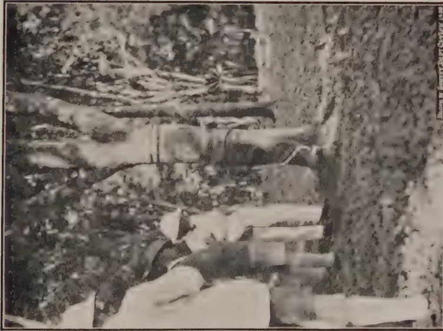
A black and white photograph showing a group of people standing in a field. In the foreground, several individuals are visible, some wearing light-colored clothing. The background shows a dense area of trees or bushes. The photograph is oriented horizontally on the page.Fig. 1. Bud-graft, Bodjong Datar 5, 11 years old.
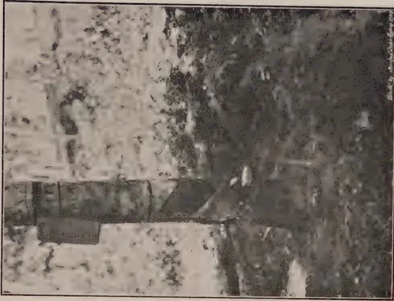
A black and white photograph showing a person standing in a field. The person is wearing light-colored clothing. The background shows a dense area of trees or bushes. The photograph is oriented horizontally on the page.Fig. 2. Bud-graft, Tijirandji 1, 9 years old.
This image is a scan of a blank page. The paper has a light beige or cream-colored tint. There are a few very small, dark specks scattered across the surface, which appear to be scanning artifacts or dust particles. No text, lines, or other markings are present on the page. 203The yield figures of the Bodjong Datar clones have been obtained from advertisements of the Estate in local papers and are taken from the results of the tapping experiments of the Proefstation voor Rubber. Reference to the first series will be found in the Archief voor de Rubbercultuur for May 1929, page 255.
A few notes on the clones and the conditions of the tests may be useful. At Boekit Maradja the bud-grafts were planted 24 ft. by 24 ft. or about 75 trees per acre. This is wide spacing (it was adopted as the existing Robusta coffee in the garden had been planted 8 ft. by 8 ft.) and may have had a definite effect in increasing yields, although the coffee which remained growing among the buildings for three years would have an opposite effect. It was noticed in Java that young trees of A.V.R.O.S. 152 had stems with uneven surfaces. This has been mentioned by Holder and Heusser* who say that "this gradually disappears and the four-year-old trees already show a smooth bark." I noticed no unevenness on the old buddings at Boekit Maradja. Tapping started on a half but the new panel has been opened on a third.
The Cultuurtuin (Ct) clones were planted about 100 trees to the acre and the soil did not appear to be specially fertile. They were thinned to about 50 trees per acre in 1927. It is to be noticed here that the tapping cut is on a third only. Both at Bodjong Datar and at Tjirandji soil conditions are favourable, the trees of the clones have plenty of space and the tapping on the former estate is very close. The thin stand on these estates is due to the budded gardens having been planted with unproved mixed clones. As clones have been identified and tested, the poorer ones have been cut out and at Tjirandji the numerous gaps are being replanted. The cyclone of January this year further thinned out the Tjirandji budded garden, removing among others three of the remaining five trees of Tjirandji 1. As was mentioned previously the breakage did not occur at the junction. At the time of my visit Tj 1 was tapped on a quarter cut as tapping on a third cut developed a tendency to brown bast.
The yield records of at least Tj. 1 and B.D. 5 and 10 among the Tjirandji and Bodjong Datar clones seem to place them in a higher class than other clones. The comparative yields under Ceylon conditions of all the clones mentioned here will be determined by trials already planned to be carried out at Peradeniya. Estates which wish to plant up with bud-grafts immediately would be well advised to plant a carefully chosen mixture of these clones.
Selected seed may be divided into three classes, (1) seed resulting from "free" pollination, that is, illegitimate seed, (2)
* Holder, H.J.V.S., and Heusser, C. Experimental Tapping on Hevea Buddings and Seedlings on Boekit Maradja Estate. Arch. v.d. Rubber. XII, 1, 1928, p. 47.
204seed from restricted free pollination, and (3) seed of which both parents are known. The selected seed of the first class, usually hand-picked from a high-yielding tree, has been used by progressive estates for many years. The female parent only is known, and, although improved yields have resulted from the use of this seed, large increases cannot be ensured. Selective thinning of the progeny of this class of seed will result in much higher yields.
An area grown from selected seed was visited in Java, on Pasir Waringin Estate. Yields of this area have been published by de Vries, Schweizer and Ostendorf (op. cit.) and are reproduced in terms of lb. per acre here. The area was about 53 acres and the yields from the seventh to the thirteenth year inclusive were: 347, 534, 593, 730 (one-third cut on alternate days) 638, 626, 663 lb. (a half cut every third day).
Table III adapted from the same authors shows the yields from 143 acres of selected seedlings on Pataroeman Estate compared with normal yields from ordinary seedlings.
Table III.
| Age. | Selected seedlings lb. per acre. |
Ordinary seedlings lb. per acre. |
||
|---|---|---|---|---|
| 6 | ... | 302 | ... | 178 |
| 7 | ... | 442 | ... | 249 |
| 8 | ... | 510 | ... | 320 |
| 9 | ... | 623 | ... | 374 |
| 10 | ... | 663 | ... | 400 |
| 11 | ... | 690 | ... | 418 |
The next step in seed selection was to ensure that seed mother-trees should be crossed with nothing but pollen from other high-yielding trees and this was done in Java by planting out, in isolated seed gardens, bud-grafts from high-yielding trees. This is not strictly legitimate for the clones had not been proved. They were, however, progeny of high-yielding trees. The first garden at Wangoenredja Estate was budded in the field during 1923 (see Archief voor de Rubbervcultuur, 1924, p. 88), and in that year a garden was planted in Besoeki. In these gardens not only were the clones unproved but the performance of the progeny of the different possible combinations was also unknown, but the chances that the progeny from this seed will be superior to progeny from seed of estate high-yielders are large.
The Tjikadoe seed garden (Fig. 4) was planted with stumps in 1919-20 which were budded in 1923-24 at different heights. Bud-wood was used from twenty-four mother-trees each of which yielded at least five times the average yield of the estate where the trees were situated. The mean estate yield was 20 gm. on a half spiral tapped on alternate days so the mother-trees yielded
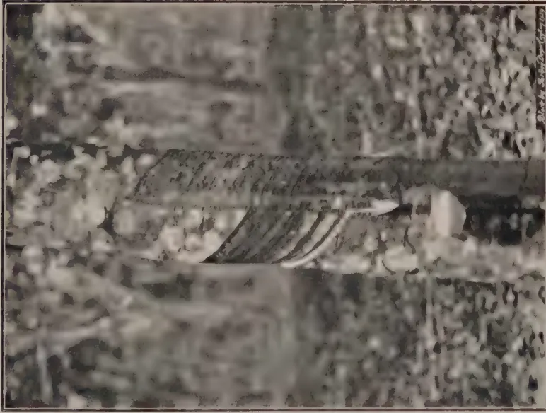
Fig. 3. Bud-graft, 9 years old, showing bark renewal.
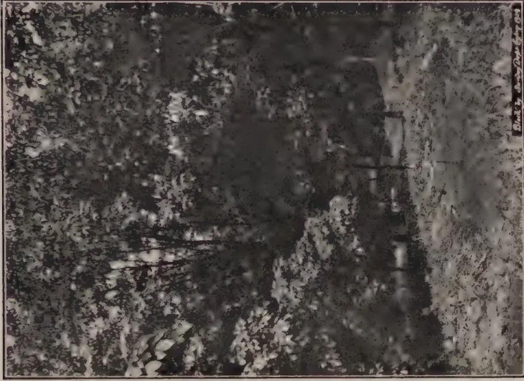
Fig. 4. The Tjikadoe Seed Garden.
[Faint page: no legible print of its own could be verified; text withheld (stage 4 review list)]
This image is a scan of a blank page. The paper has a light beige or cream-colored tint. There are a few very small, dark specks scattered across the surface, which appear to be scanning artifacts or dust particles. No text, lines, or other markings are present on the page. 205at least 100 gm. (excluding scrap). The seed sells for twenty-five guilder cents each (Re. - 28) and the garden has been a big commercial success. The trees are now being tapped both on stock and scion and the thinning out of unproved clones will be possible. Fig. 5 shows another seed garden lately laid out. Hand-picked seed of the Tjirandji clones grown in the budded garden sells for fifty guilder cents each (Re. -/55). These prices indicate the value placed on improved material.
The latest development of seed gardens is combined with hand pollinations of good clones and the testing of the progeny. Trees (or clones) may either be selfed or crossed and both lines of work should be investigated. Rubber trees, or at least many of them, are self-fertile, but it is thought that more successful self-pollinations are obtained if pollen is used from another tree in the same clone.
The possibilities of hand pollination were clearly evident when Heusser published his first Tjinta Radja* figures. In 1919 whilst investigating the practicability of artificial pollination with rubber, Heusser hand-pollinated clone 36 with pollen from clone 35. The plants resulting from this cross were planted on the Tjinta Radja Estate along with illegitimate seeds of clone 49, seedlings from good trees and buddings from 35, 49 and 27. Table IV shows the yield obtained for two years. Figures for the last year were published by Heusser in 1928.†
Table IV.Yields of bud-grafts and seedlings (in gm. per tree per tapping)
| Age of trees in years (No. of trees in brackets) |
||
|---|---|---|
| 4 - 5 | 7 - 8 | |
| Cross 36 x 35 | 11.2 (20) | 34.2 (19 - 21) |
| Illegitimate seed of 49 | 7.4 (9) | 23.9 (10 - 24) |
| Selected seed | 6.6 (10) | 10.5 (227-289) |
| Clone 49 | 8.3 (35) | 24.9 (107-112) |
| Clone 35 | 8.7 (26) | 21.3 (236-217) |
| Clone 27 | 5.6 (11) | 18.6 (99 -107) |
This experiment was of very great value. It showed (1) the possibility of seedling crosses yielding much more than either of the parents (clone 36 has been tested elsewhere), (2) that
* Heusser, C. Experimental Tapping on Hevea Seedlings and Buddings on Tjinta Radja Estate. Arch. v.d. Rubber, X, 12, 1926.
† Heusser, C. Experimental Tappings on Hevea Buddings. Arch. v.d. Rubber, XII, 1, 1928.
206among the progeny of a cross between two comparatively high-yielding trees may be particularly good individuals from which new clones may be formed and new crosses obtained, and (3) that as illegitimate seed of a particular clone may produce such good progeny crossing or selfings of the clone might produce exceptionally good progeny. Further yield records of this experiment are available and should be published shortly.
Dr. Heusser is also in possession of three years' yield records of the progeny of thirty different crosses. The promise of finding greatly superior mother-trees among such progeny has been maintained and in addition it has been found that one clone seems to be 'prepotent' in producing high-yielding progeny when crossed with different clones, that is to say, that apparently many of the factors influencing yield that it carries are dominant.
There are two practical applications of this research. When a combination can be discovered which will produce progeny of sufficiently good average yield to merit planting on a commercial scale, isolated seed gardens of the two clones involved may be planted to produce seed in commercial quantities. In such seed there will always be the possibility of some seeds having been selfed and when testing different combinations it will be advisable to make selfings of all the clones used. There is every reason to suppose that the moderately dense planting of such seed followed by selective thinning will produce areas yielding more than if planted with the best clones existing at present. Selective thinning will probably always be more important with seedlings than with clones owing to the greater coefficient of variability of seedlings. Only the approach to a pure-line will produce more homogeneous material.
The second practical application of research work on crossing is the discovery of new and superior mother-trees. Not only can these be used for forming clones (after being proved) but they will also be available for new crosses. The vista is opened of the production decade after decade of more and still more superior planting material.
The production of proved seedlings in Ceylon cannot be expected for some years but the commercial production of seed may be hastened by planting up isolated seed gardens before proving the different combinations, in the hope that one combination at least will be successful. If four or even eight clones are planted in one garden two or six can always be cut down (and re-budded) after testing elsewhere hand-pollinated crosses of these clones. This possibility is mentioned in a later section of this report.
Old rubber may be used for seed gardens. At Buitenzorg I saw a block of seventeen-year-old rubber stumped and budded with A.V.R.O.S. 50. (Fig. 6.).
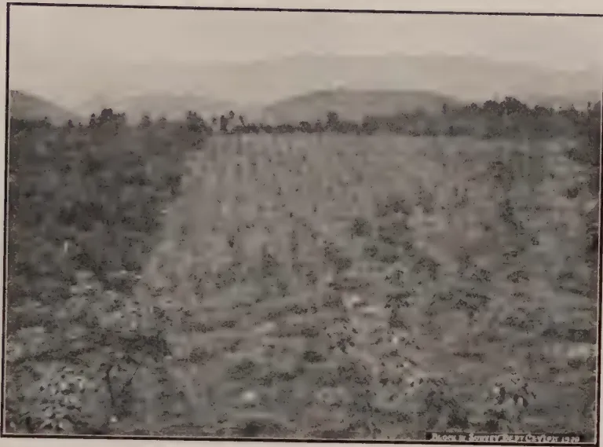
Fig. 5. Isolated seed garden, Java.
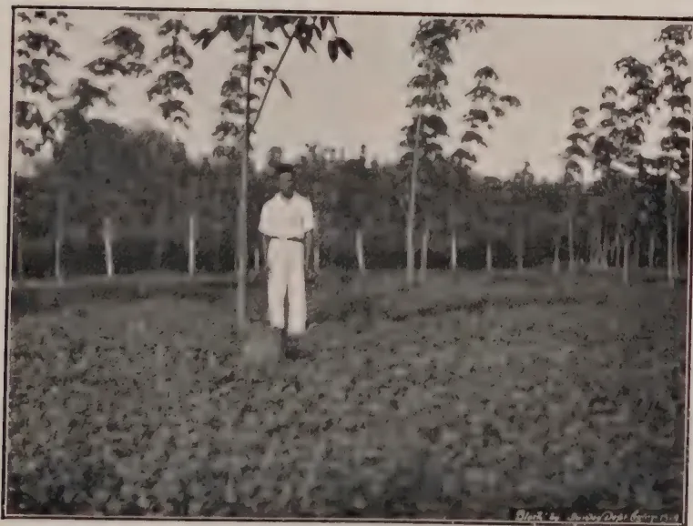
Fig. 6. Budding on old rubber.
This image is a scan of a blank page. The paper has a light beige or cream-colored tint. There are a few very small, dark specks scattered across the surface, which appear to be scanning artifacts or dust particles. No text, lines, or other markings are present on the page. 207The rejuvenation of areas of old rubber will become more and more important as time goes on and new areas of potential high productivity come into bearing. In countries like Ceylon and Java where land is not available for new clearings the interest in improved planting material must be associated with rejuvenation.
What is spoken of as rejuvenation is the cutting down of all or most of the trees in an area and replanting with bud-grafts and selected seedlings. Rejuvenation may be found particularly difficult on land which has lost most of its top soil.
The two methods of rejuvenation which have already been tried in the Dutch East Indies are (1) clearing out all trees, and (2) leaving trees which yield from 60 to 100 gm. dry rubber per tapping. Such trees are left as it is not likely to surpass these yields with the planting material available at present. Two estates were visited which had left a certain number of the old trees. After removing the other trees those remaining were found to be producing a large proportion of the original yield of the area. For example on one estate 23 remaining trees per acre produced 80% of the original yield; on another nine trees gave 50%. Whether to leave trees or to cut down everything will depend upon the individual yields of the trees and on personal choice. Some planters prefer to remove all trees. If it is intended to leave any trees individual yield records have to be taken and for this purpose the measuring of latex once a week or once a month should be satisfactory.
In both methods, the trees which are to be removed are heavily tapped for one or two years before removal. One method is to tap with two half cuts on the same side and down to the wood, using about 2 in. of bark per cut per month (daily tapping) according to the bark and time available. This should produce at least three times the normal yield of rubber per year for at least two years and perhaps three. The best method of tapping will have to be determined by experiment, but it is certain that the value of the extra rubber produced will go a long way towards meeting the cost of rejuvenation and the loss of revenue whilst the area is out of tapping. In some districts the sale of the old trees for firewood will materially reduce the cost of clearing and planting. In from seven to eight years after planting, the yields of new areas planted with carefully selected material can be expected to reach the yield of the former old trees.
After felling and stumping the lateral roots may or may not be removed according to the prevalence of Fomes. In Ceylon the removal of all roots will probably be necessary. The new plants are put in if possible between the old rows. Manuring where necessary to establish cover plants in combination with
208methods of preventing soil erosion may usefully form part of the process of rejuvenation.
The system of replanting old areas is in the main similar to that used in planting new areas and this is discussed in the following section:—
Planting material was discussed by the Agricultural Division of the Fourth Pacific Science Congress and essentially it was concluded that (i) bud-grafts at the present time form the best planting material, (ii) clones alone should not be planted unless at least five years' tapping records are known and (iii) the tapping of legitimate seedling crosses is not so far advanced as with bud-grafts but information is available which indicates that some seedling crosses will be as good as bud-grafts.
Whether bud-grafts are planted alone (and this practice is thought to be increasing) or mixed with the best selected seedlings available, at least five clones are used. Generally the different clones are planted in successive rows along the diagonals, one row per clone (Figs. 9 and 10). This facilitates thinning and labelling. Where seedlings are interplanted, they take up every alternate diagonal row.
Planting distances met with were 15 ft. by 15 ft. (193 per acre) and 17 ft. by 17 ft. (150 per acre). In Java about 350 buddings per h.a. (140 per acre) are planted. Denser planting 12 ft. by 12 ft. (300 per acre) for clones not so thoroughly proved has been recommended. At this density thinning will have to commence at an early age. This density for seedlings is probably more satisfactory but not much more so than 200 per acre.
Selective thinning is done first by eye and secondly by test tappings in the fourth year. These test tappings are carried out for 15 days; the latex is measured in the last ten days. Test tappings are frequently unreliable and even the first year's yield is often not a very satisfactory basis for thinning out owing to some high-yielders being slow starters and vice versa. For this reason it has been found that planting 200 seedlings per acre is almost as good as planting 300. The closer the planting the more the thinning that has to be done in the early years when tapping records give uncertain results, and the greater choice that 300 trees per acre give is counter-balanced to some extent by the necessity for earlier thinning.
With bud-grafts thinning on girth is said to be satisfactory as in any one clone there is a high correlation between girth and yield.
A tentative recommendation for planting in Ceylon is, in the meantime, to have alternate rows of bud-grafts and selected seedlings, 15 ft. by 15 ft. and to use seven or eight of the clones already mentioned.
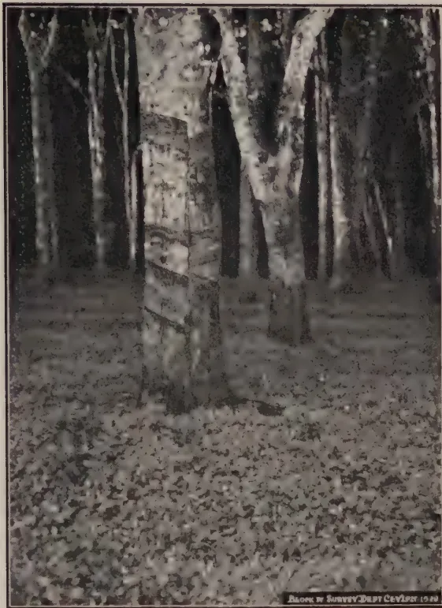
A black and white photograph showing a dense grove of old rubber trees. The trees are heavily tapped, with numerous horizontal scars visible on their trunks. The ground is covered in fallen leaves and debris. A small caption at the bottom right reads "Photo by Survey Dept Ceylon 1920".Fig. 7. Rejuvenation: old rubber heavily tapped.
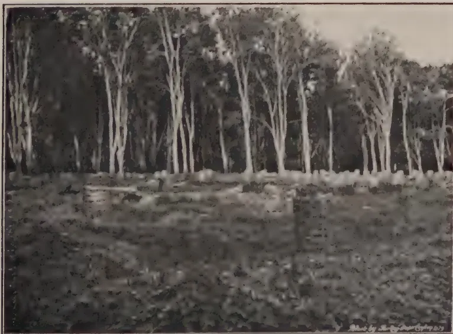
A black and white photograph showing a new planting of rubber trees. The trees are young and slender, standing in a neat row. The ground is covered in low-lying vegetation. A small caption at the bottom right reads "Photo by Survey Dept Ceylon 1920".Fig. 8. Rejuvenation: new planting.
This image is a scan of a blank page. The background is a uniform light beige or off-white color. There are several small, dark specks scattered across the page, which appear to be scanning artifacts or dust particles. No text, lines, or other graphical elements are present. 209In Sumatra and Java budding almost invariably is done in the nursery. This is always recommended owing to the greater ease of supervision. In order to get a high percentage of successes budding coolies have been known to cut young bud-wood from ordinary estate trees and use this instead of the bud-wood supplied. This practice can easily be prevented when budding is done in the nursery.
Stocks are budded as near to the ground as possible. The procedure adopted on one estate in Sumatra (where, using all possible buds, the percentage of successful buddings varied from 78 per cent. upwards according to the clone used and where the average success was 85 per cent. over many thousands of buddings) is as follows: The horizontal cuts used in baring the panel are made to the wood. The vertical cut on the top of the panel is made to the cambium only. The bud-patch is prepared without touching the cambium with the hand but no time is lost in making the patch fit the panel. Some patches I saw had about in. space between the patch and the side of the panel and yet the bud was alive. After the patch is prepared the bark over the panel is gently pulled away from the top and is held away from the stock while the patch is placed in position and carefully pushed to the bottom of the flap. The flap which is about 3 in. long and still adheres at the bottom is then replaced over the patch in the ordinary manner. The flap is held in position by a bandage of waxed cloth applied tightly. The bandage is then scraped with the bone end of the budding knife to ensure a close fit. Scraping over the bud itself is done lightly with the flat side and over the rest of the bandage more pressure is applied with the edge of the bone. Variations of this method were seen in Java. There the bud-patch was cut to fit more exactly into the panel and plantain fibre was used as wrappings. Shade is not required in the nursery.
Three points that should be watched in budding are:—
It is also stated that budding is more successful if done during the growth period of the plant. To ensure having good stumps on which to bud four times the amount of seed actually necessary should be sown. An experienced coolie may be expected to make 200 buddings a day. It is not wise to insist on more than this.
210The bud is opened in from twelve to fourteen days† and subsequent procedure depends on the method of planting adopted. On the estate mentioned above the stock is cut back to within one inch or so of the top of the patch, six to ten days before planting. At the time of planting the bud will be about in. long and the stumps are carried to the field in bamboo trays. Here there is no ring-barking or breaking off. It is more convenient to leave a longer stump and to paint the end with different colours to represent the different clones. The stock should not be cut back until a week after opening.
If stumps are cut at say 18 in. or 20 in. before planting they are cut down to within a few inches of the bud about one month after.
The disadvantage of cutting back in the nursery is that you must plant out within two weeks or so even if the weather turns unpropitious and for this reason some estates prefer to top in the nursery and then to ring-bark 3-4 in. above the bud ten days after planting. When the bud sprouts the stump is cut at the place ringed.
The treatment of the snag varies. On some estates it is left to rot away or to be eaten by a species of white ant. On others it is sawn off close when the scion has formed a definitely woody base. If cut, the cut surface is coated with paraffin wax or paint. One estate makes a practice of cutting back to 6 in. in the nursery and planting immediately. The best practice for Ceylon will have to be discovered by experience.
On many estates buddings are planted in a shallow depression about one inch deep in order that the junction is about ground level. As the plant grows, side branches are removed for about six feet and if necessary the tree may be pruned to a good shape.
There is a general impression that bud-grafts are more successful if the scion is growing on a stock raised from illegitimate or legitimate seed of the same mother-tree or clone that produced the bud.
It has already been recommended* that tests with seedling rubber in Ceylon should be carried out in 24-tree plots replicated five times and laid down in randomized blocks.
The coefficient of variability in the bud-grafts of one clone is less than that of seedlings and for bud-grafts plots of twelve trees may be sufficiently large. Where seedlings are included in any tests of clones the plot should contain at least twenty-four trees.
† A period of twenty days has been recommended in Ceylon.
* Lord, L. and Abeyesundera, L. Field Experimentation with Rubber. Dept. Agric. Ceylon Bull. 82, 1927.
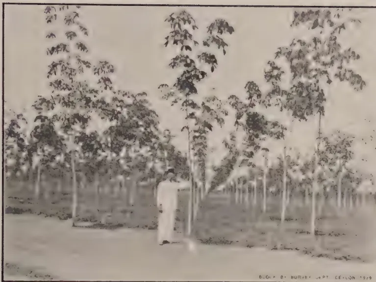
BUGH O. BOURNEY, JAPT. Ceylon 1929
Fig. 9. New plantings, Sumatra.
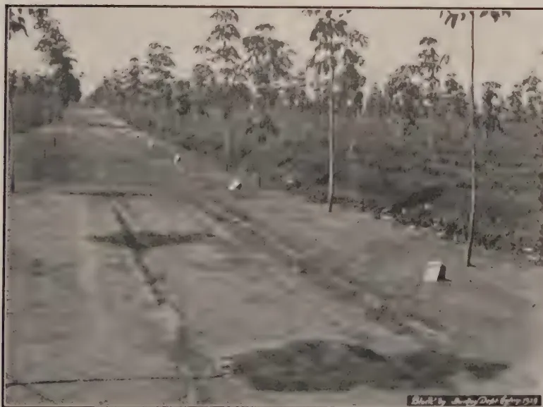
Photo by John D. ... 1929
Fig. 10. New plantings, Sumatra.
This image is a scan of a blank page. The paper has a light beige or cream-colored tint. There are a few very small, dark specks scattered across the surface, which appear to be scanning artifacts or dust particles. No text, lines, or other markings are present on the page. 211Testing clones against ordinary seedlings has been discontinued in the Dutch East Indies. Control plots, so to speak, are planted with standard clones already tested. In Ceylon I would suggest that for the present Heneratgoda No. 2 should be used as the control and that one test at least should include plots of the best seedling rubber available. For control plots bud-grafts are more convenient than seedlings.
The method of tapping employed by the A.V.R.O.S. Proefstation is as follows:—
Table V.
The method of tapping bud-grafts and seedlings.
| Year of tapping. |
Bud-grafts. | Seedlings. | ||
|---|---|---|---|---|
| Cut. | Height to bottom of cut. |
cut. | Height to bottom of cut. |
|
| 1st (4 yrs. old) | spiral | 50 c.m. | spiral | 50 c.m. |
| 2nd | ,, | 80 c.m. | ,, | 62.5 c.m. |
| 3rd | ,, | 110 c.m. | ,, | 75.0 c.m. |
| 4th | ,, | 110 c.m. | ,, | 75.0 c.m. |
The cut is from left to right at an angle of 30 deg. and in. of bark is used monthly (alternate monthly tapping). The latex is coagulated in cups and the lumps are turned into crepe at the end of the month. Tapping is carried on throughout the year.
Where land is scarce and the number of mother-trees to be proved is large the method of testing used by the Java Proefstation at Tjiomas will be useful. There plots are of five trees replicated three times. Three standard clones are used as controls and these are replicated six times. A border row of trees surrounds the trial area.
The method of artificial pollination in general use is essentially as follows:—Unopened female flowers are taken (just before they would have opened naturally) and are opened by means of forceps. The staminal column of the male flower is removed and crushed and placed on the pistil. This is then removed and another staminal column from the same tree is taken, crushed and allowed to remain inside the female flower. The female flower is then plugged with kapok which is placed between the petals and the petals pressed gently against it. It is necessary to handle the flower gently so that no latex exudes. Some workers bag both male and female flowers and this is the safest method. After pollinating the bag is not necessary. The labelling must be done carefully; the other female flowers on the flowering stalk should be removed.
212Pollinating is carried on all day and, under very careful supervision, coolies can be trained to do the work. Dr. Heusser recommends making 3,000 pollinations of each combination as the percentage of success may be very low.
The general impression in Java and Sumatra is that though stocks may have a definite influence on the resulting tree yet at present it is far more important to test scions than stocks. At the same time whenever possible buds are put on to stocks raised from seed of the same mother-tree or clone which produced the bud. It is thought that this ensures a more harmonious union. There is evidence that stocks influence at least the shape of the junction. The two photographs (Figs. 11 and 12) show two bud-grafts of clone 2 in the Tjikadoe seed garden on two different stocks. Two distinct types of junction have been formed. At the Cultuurtuin at Buitenzorg is to be found evidence that stock may have large influence in kapok. Fig. 13. shows bud-grafts of the same kapok tree budded on to (1) an ordinary kapok stump and (2) a stump of Surinam wild kapok. The growth of the bud-graft on the Surinam stock is much better than the one on ordinary kapok stock. In the same garden the influence of stock on scion is being investigated with bud-grafts of Hevea brasiliensis budded on to stocks of H. brasiliensis, H. spruceana and H. collina. These stocks were budded with Ct88 in April, 1927, and at present the bud-grafts on H. collina are not so far advanced as the others.
There is no definite evidence of the influence of scion on stock. In the Tjikadoe seed garden where budding was carried out some distance up the stock, the stocks of one clone seemed to yield more than the similar stocks budded with other clones. The stocks, however, came from mixed seed and the experiment is not at all precise. Evidence that the scion has no apparent influence on stock is forthcoming from two places. At the Cultuurtuin a stump of H. brasiliensis was budded with H. collina and the scion was again budded with H. brasiliensis. H. collina produces a yellow latex and the collar of H. collina which now exists on the resulting tree still continues to yield yellow latex while the stem above the junction yields white latex. On the H.A.P.M. estates is a tree which has been produced by budding the corky-barked species H. brasiliensis var. Granthami, Bartlett on to ordinary smooth-barked H. brasiliensis. Fig. 14 shows that the smooth bark character has not been affected by the scion.
Investigations need to be continued on the influence of stock on scion and these investigations are faced with technical difficulties. Identical stocks are necessary and to obtain identical stocks it is necessary either to breed a pure-line (this may take many years or even be impossible) or else to produce marcots
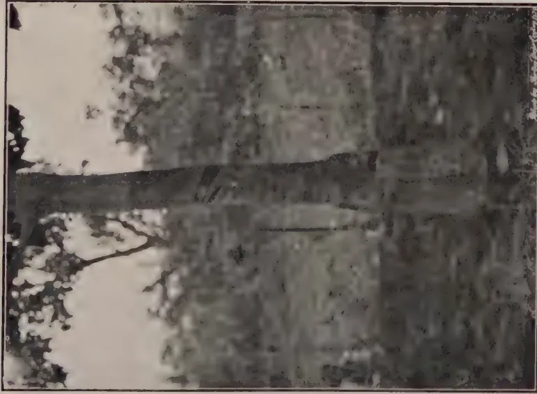
Fig. 11.
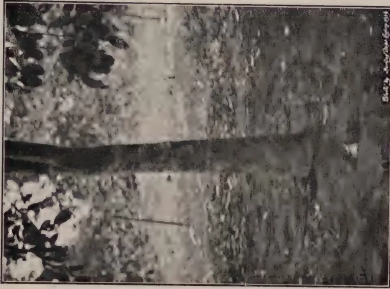
Fig. 12.
The same scion budded on different stocks.
[Faint page: no legible print of its own could be verified; text withheld (stage 4 review list)]
This image is a scan of a blank page. The paper has a light beige or cream-colored tint. There are a few very small, faint dark spots scattered across the surface, which appear to be scanning artifacts or dust particles. No text, lines, or other markings are present on the page. 213from one clone. Marcots may be produced comparatively easily from seedlings but only with great difficulty from buddings.
Mr. Ramaer of the Java Rubber Proefstation has lately succeeded by a process of bisection in producing two plants from one rubber seed; this discovery may open out another means of testing the effect of stock on scion.
In both Java and Sumatra tapping is generally on a half spiral cut at 30 deg. from left to right with in. of bark consumption per year. In Sumatra alternate monthly tapping is the rule; in Java both alternate daily and monthly tapping is seen. One group of estates visited used up 12 in. of bark per year. The task varies from 300-350 trees according to the land and the age of the trees. A tapping knife is used with which it is more simple to tap higher than with the chisel. The left to right cut has been found to give more latex and produce fewer wounds than a right to left cut.
The above notes refer to seedlings. With bud-grafts a third cut has been advised after a year or so of tapping. Experiments are also being carried out with two tapping cuts starting at one and two metres high, one cut immediately above the other. One-third, one-quarter and half cuts are being tried. These experiments are being carried out as it is known that with bud-grafts the yield falls off only slowly as cuts are made higher up the stem.
This property of bud-grafts and the effect of the phenomenon of periodicity on yield of latex both call for investigation and this subject is again referred to later in this report.
Bud-wood and budded stumps are offered for sale by many estates in Java and Sumatra. The cost of bud-wood varies from about Rs. 2-00 to (for one clone) Rs. 28-00 per metre. Budded stumps of one particular clone are sold for Rs. 5-50 each but of the commoner clones for Re. 1-00. Bud-wood of these clones costs from Rs. 2-00 to Rs. 3-00 at the present time.
In buying bud-wood it is safer to stipulate for (1) bud-wood grown in bud-wood nurseries and (2) bud-wood under eighteen months old.
For multiplying bud-wood, nurseries with plants one metre by one metre are used. (Fig. 15).
Native rubber has formed the basis of much study and speculation from the point of view of future production. It is outside my province to discuss this aspect, but it may be stated that the conditions under which native rubber is grown and tapped are leading authorities to believe that it will, in time, have a powerful stabilising influence on prices.
214I was asked to make inquiries about the cultivation of native rubber with reference to the measures taken by the Department of Agriculture, Industry and Commerce for its improvement. These measures consist of (1) the teaching of better methods of tapping and (2) the sale to growers of selected seed and stumps grown from selected seed. The distribution of selected material is shown in table VI which is compiled from figures supplied by the Department.
Table VI.Distribution of selected material to native growers
in 1927.
| District. | No. of selected seeds. | No. of stumps. |
|---|---|---|
| Atchin | 292,000 | 23,000 |
| Tapanoeli | 54,000 | — |
| West Coast Sumatra | 350,000 | — |
| West of Borneo | 700 | 100 |
| North Celebes | — | 69,900 |
There are in existence twenty-eight nurseries at the different district headquarters used for producing stumps. Stumps have been sold at two guilder cents and seed at one and a half cents.
A few notes were made on the use of green manures and on the methods of preventing soil erosion. Soil erosion is prevented generally by silt-pits combined with continuous ridges. The silt-pits are about eight feet long, two feet broad and two feet deep and the soil taken out of the pits is used for making the ridges which are about one foot high. The silt pits are sufficiently near together to supply enough soil for the ridges. (Fig. 16).
The ridges are generally on the top side of the pits, the object being to ensure that the rain-water drains through the soil into the pit. One research worker in Sumatra lays particular emphasis on the benefit of rain water passing through the soil. The distance apart of the ridges depends chiefly on the contour of the land. It will depend to some extent on the type of soil. In old rubber the ridges run along or across the diagonals or in any combination according to the contour of the land. On steeper land they generally run along the contours. Centrosema pubescens is planted on the ridges and grows even under shade.
In Sumatra particularly the presence of these ridges (with their silt pits) even on comparatively flat land is a striking feature of rubber cultivation and they appear to be extraordinarily efficient. On many estates the whole estate is, as it were, a succession of banded plots containing from one to twenty or more trees according to the contour of the land. The efficacy of this
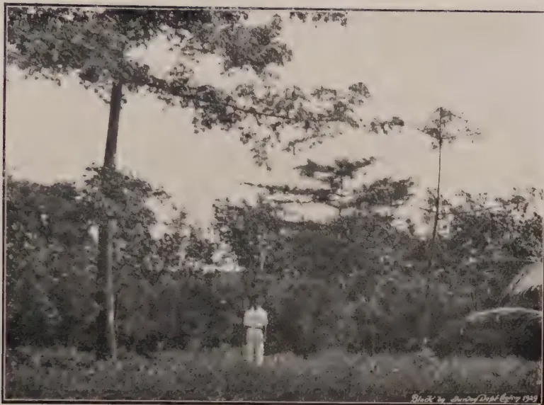
Fig. 13. Kapok: same scion on two different stocks.
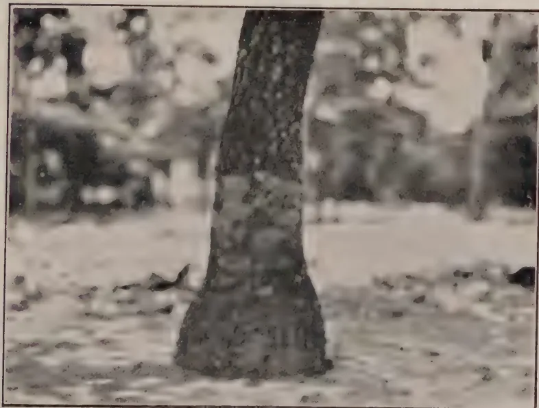
Fig. 14. Influence of scion on stock (see text)
This image is a scan of a blank page. The paper has a light beige or cream-colored tint. There are some very faint, blurry marks scattered across the surface, which appear to be scanning artifacts or dust particles. No text, lines, or other graphical elements are present. 215system of preventing soil erosion will depend upon the natural drainage and where the water-table is high drains may have to form part of the system.
A low herbaceous creeping plant, Eupatorium triplinerve E. Ayapana, is sometimes used with good effect on ridges or the edges of individual tree terraces to prevent local erosion. This plant is found in Ceylon and has been described by Macmillan* under "Ayapana Tea."
There is no general agreement on the correct use of green manure plants, and the whole subject requires further investigation. Covers are largely used but there is a difference of opinion on the following points: (1). In old rubber, confining the cover to the soil erosion ridges or allowing it to grow over the whole area. Where manuring is practised covers may utilise much of the manure meant for the trees. It is possible that turning in the cover when applying nitrogen may be effective although one visiting agent informed me he had had no effect from turning in green manure alone. This experience will probably not be general and it has been stated that the presence of the cover without either turning in or artificial manuring has resulted in increased yields. The problem is complex and will take time to solve. (2). The effect of complete covers in young clearings.—There is a fairly general impression that a complete cover retards the growth of the young trees. A partial explanation of this is probably connected with the effect of the cover on soil temperature.
The cover chiefly used is Centrosema pubescens. Calopogonium mucunoides and Pueraria phaseoloides are sometimes mixed with it. C. mucunoides is not recommended as it encourages eelworms. Vigna is attacked by Rhizoctonia solani and may be completely destroyed. If so, it is then extremely difficult to re-establish. Unfortunately R. solani also attacks Centrosema.
Leucaena glauca was seen growing as a low hedge in young rubber. It is planted thickly, in lines, and kept lopped at about 2 ft. high. It stands periodical lopping better than Crotalaria anagyroides. The loppings are spread on the surface as a mulch. L. glauca may be useful in Ceylon for making contour hedges.
On one estate P. phaseoloides was being taken out as it was found that the hairs of the stems penetrated the feet of the coolies and caused sores. This has not been noticed elsewhere.
Mimosa invisa is commonly used as a cover. Where there is no prolonged dry season Mimosa will completely or partially control illuk (Imperator cylindrica). Its effect in improving conditions in certain soils may be very marked. On the Govern-
* Macmillan, H.F., Tropical Gardening and Planting.
216ment Rubber Estate at Sapang we were shown an area of rubber on very poor soil. Twelve-year-old rubber was growing so badly that the shade was not sufficiently dense to preclude the establishment of Mimosa. The soil was too poor to establish Centrosema. After a number of years the improvement of the trees was such that the increased shade commenced to kill out the Mimosa and it was found easy to establish Centrosema. The action of the Mimosa is attributed both to the thick cover of humus formed and to the action of the roots in aerating and loosening the soil.
Mimosa dies out under ordinary rubber shade and can be eradicated in the open by preventing it from seeding. In Ceylon however Mimosa invisa has been considered to be a potentially serious weed and estates have been warned against planting it owing to the danger of its gaining access to waste or chena lands. A letter on this subject was placed before the Estate Products Committee by Mr. F. A. Stockdale in 1925.
The lines of research suggested below are agricultural and botanical. Problems on other lines where research is required, mycological, chemical, technological, will occur to all but are hardly concerned with this report. The list of problems mentioned here is by no means exhaustive (it is hoped that it includes the most urgently important) and it must not be supposed that work on some of these problems is not already being carried out in Ceylon as staff, finances and land permit. The list includes those problems on which, after seeing in some detail the work in Java and Sumatra, I consider it important that research or further research should be carried out. Not only are some of the lines of work important but information on certain subjects is urgently required if the full benefits are to be received from the developments which have already taken place.
Numerous Ceylon mother-trees have already been chosen and bud-grafts from these are being or will be tested at Niviti-galakelle and at Peradeniya. The question will arise whether estates mother-trees should not be provisionally proved also or entirely on the estate itself under supervision of the Rubber Research Scheme. The area of departmental or Research Scheme land suitable for rubber experiments is very small. Two other questions will also arise: (1) the method of recording those mother-trees which it is desired to have tested by the Agricultural
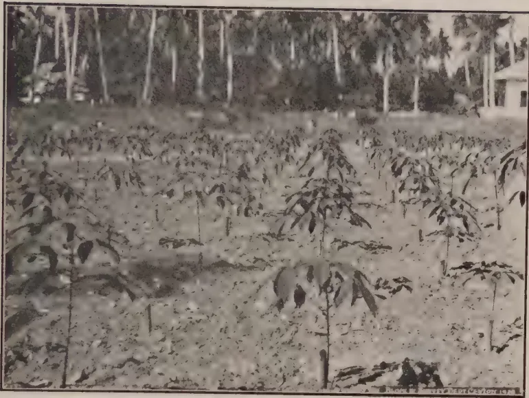
A black and white photograph showing a young bud-wood nursery. The foreground is filled with rows of young, leafy plants, likely rubber seedlings, growing in a field. In the background, there is a dense line of tall palm trees. A small building is visible on the right side of the background. The image is framed by a thin black border.Fig. 15. A young bud-wood nursery
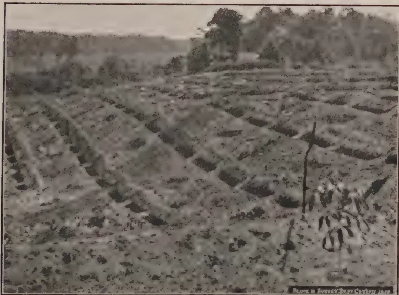
A black and white photograph showing a hillside with soil erosion ridges and silt-pits. The foreground shows a field with rows of soil erosion ridges and silt-pits. In the background, there is a dense forest. The image is framed by a thin black border.Fig. 16. Soil erosion ridges and silt-pits, Sumatra.
[Faint page: no legible print of its own could be verified; text withheld (stage 4 review list)]
This image is a scan of a blank page. The paper has a light beige or cream-colored tint. There are a few very small, faint dark spots scattered across the surface, which appear to be scanning artifacts or minor imperfections in the paper. No text, lines, or other markings are present. 217Department or the Research Scheme and (2) the conditions on which clones will be tested or estate tests supervised. In Java it is stated that the number of mother-trees on estates is several thousands, of which only a few hundred trees under the direct observation of the Proefstation possess yield records extending over a number of years. Figures of yield tests of Ceylon clones either carried out or supervised by the Research Scheme or Department of Agriculture should, I think, be made available to the industry in Ceylon at the discretion of the body carrying out the tests. There will be a definite commercial value to estates whose clones have been "provisionally selected" or "proved" officially, as only the owners of the mother-trees will be able (for some time at least) to supply bud-wood.
This, I think, is urgent and important. In Malaya and the Dutch East Indies there are clones which are recommended or which have been "provisionally selected" by the Proefstations. This stage has not been reached by any Ceylon clones, so early information on the performance in Ceylon of some the better-known foreign clones is very desirable. A scheme for testing a number of these clones (most of which I have seen in tapping) at Peradeniya has already been drawn up for the Director of Agriculture and where necessary budded stumps have already been ordered. I suggest that bud-wood nurseries of these clones should be put down to supply demands which may be anticipated both before and after the test tapings. A similar trial of the clones under the different climatic conditions of the lowcountry is extremely desirable.
This work has already progressed in Sumatra and Java and yield records of the progeny of various crosses will shortly be published by Dr. Heusser. It has been found, as was to be expected, that the progeny of a cross may show considerable variation. Very high-yielding individuals have been obtained which are now being used as mother-trees. Certain clones seem to be dominant for some of the factors which influence yield. This has been mentioned already in this report and there is no doubt that similar work must be commenced in Ceylon. The work is difficult and laborious and will take up much of the time of a trained man. Land will be required for testing out the progeny.
This is a corollary to (c) above. If certain selfed or hybrid progeny are satisfactory the only way to obtain commercial
218supplies of seed is by means of isolated seed gardens. According to Java recommendations these should be from two to four miles distant from the nearest rubber. Little is known of the pollination of the rubber flower and these distances may be too short or too long. But it is probable that the centre trees of even a 20 or 30-acre block will not be pollinated with pollen from outside the block and this implies that seed gardens could if necessary be laid down on estates.
Seed gardens can be established either (1) as the result of test tappings of hand-pollinated progeny or (2) blindly. To wait for the result of test tappings will mean five or six years' delay but it is also possible to plant up, say, six gardens, as soon as bud-wood is available, on the following system:—
Two gardens each containing four different clones (for producing hybrid seed).
Four gardens each containing only one clone (for producing selfed seed), e.g., Heneratgoda No. 2, Heneratgoda No. 24, Tj. 1, B.D.5.
At the same time hand pollinations are made of the same combinations as are in the gardens. Each of the mixed gardens has six possible combinations, and when the best combination has been proved by tapping the unwanted two clones in the garden are cut down and budded from the two clones left. Some idea of the work necessary may be gained from the following: In the two mixed gardens is a total of twelve combinations. If we assume about 5% successes in pollinating (some workers report 0.5%, some 25%) to obtain 50 trees of each combination about 4,800 hand pollinations are required (one fruit has three seeds) plus another 800 selfings. For the trial of the progeny (this will include two or three standard clones) about 8-10 acres of land will be needed. After this stage the process should be repeated with the new clones which will be selected and the second series of seed gardens and progeny tests will require more and more land as time goes on.
The sparse experimental data which exist in Ceylon indicate that on some soils at least nitrogen is effective in increasing the yield. None of the experiments is precise enough to inform us of the optimum amount of nitrogen to apply or at what level of prices it is profitable. There has been shown elsewhere to be a definite time lag in the effect of at least certain manures. Phosphoric acid has been effective in Malaya and both phosphoric acid and potash in Java. Nitrogen has been shown to be profitable in Sumatra* on white soils and continued application is
* Grantham, J. Manurial Experiments on Hevea. Arch. v.d. Rubber VIII jaar, 8, 1924, pp. 501-519.
Grantham, J. Manurial Experiments on Hevea, II. Ibid. XI jaar, 10, 1927, pp. 465-471.
219proving successful. Even on the red soils there are indications that manuring is profitable after a certain age. There can be no doubt that precise information as to the results of different dressings of different manures (and if possible, in different districts) is required in Ceylon.
This is a question of the utmost importance for Ceylon, and, whereas the Department of Agriculture is in a position to carry out an experiment at Peradeniya, other and corroborative experiments can only be carried out in co-operation with estates. Where land for new clearings is not available rejuvenation offers the chief hope of effecting radical improvements, but the practicability of rejuvenation on Ceylon soils must first be proved.
Density of planting has previously been considered only in opening new areas but if rejuvenation proves to be successful it may have to be considered in replanting old areas. The planting of 150, 200 and 300 trees per acre followed by selective thinning on appearance, girth measurements, or test tappings or any combination of these, is established practice. The effect of leaving dense stands of 300-400 trees per acre is being tested in Sumatra. It is possible, but this is pure speculation, that dense plantings may produce the cheapest rubber up to a certain age and that after that period the fall in production may be rapid; but if progressively superior planting material becomes available as time goes on rejuvenation of such areas at 15 or 20 years would follow automatically. It would appear that an experiment to test this part of the question is desirable. The best density of planting where selective thinning is to be (as it generally will be) followed should also be investigated.
Investigations into these should proceed hand in hand with the work in (g) above; of the methods possible may be mentioned: thinning by appearance; by girth; on the results of test tappings; and on latex vessel area. It is believed that in the buddings of one clone the yield is closely correlated with the girth. If so selective thinning will be simplified and this point should be determined.
Opinion on the correct use of cover crops is divided. Whereas there is general agreement as to their effectiveness in preventing erosion when planted on the edge of contour terraces or of individual tree terraces, and on the ridges which are so largely used with the silt-pits in Sumatra, there is a difference of opinion as to the effect of covers growing all over a newly-planted
220clearing or even under old rubber. One body of opinion holds that covers rob the young plant of water and plant food and keep the soil so much cooler that growth is retarded. It has been said that turning in the cover under old rubber (i.e., green manuring) has had no effect on yield. Some estates prefer to confine the cover crop to the soil erosion ridges so that it does not compete with the tree for the manures applied. Other estates have a complete cover and definite increases of yield have been attributed to it. The questions may not be of such vital importance as others but deserve investigating.
There can be little doubt that stock may have a definite influence on scion and the investigations on this subject should be continued. The influence of scion on stock is considered to be negligible. Where stocks have been budded high some effect has been noticed on the stem of the stock. How this may be turned into practical use is not known at present.
With the spread of bud-grafting and the coming into tapping of extensive budded areas methods of tapping are being revised. In seedling rubber also it has been shown that the phenomenon of periodicity which occurs in the rubber tree may have an effect on the length of the economic tapping period* (this refers to alternate monthly or other periodic tapings). Bark consumption is heavier and the angle of the cut is steeper in Sumatra and Java than in Ceylon. Some workers visualise having a shorter period for renewal, others a longer. Lately it has been recommended to tap the second panel of bud-grafts on a third.
It is obvious that further research on tapping systems is required.
To conduct all or even some of the researches mentioned above will need more staff and much more land than is available at present. The co-operation of estates would appear essential in carrying out many of the experiments adumbrated and the supervision of such experiments will necessitate something in the nature of an Agricultural Division of the Research Scheme. The Agricultural Division of the Rubber Proefstation, Java, is under the control of the Director and under-Director and is staffed in addition by three agriculturists. The Agricultural Division of the A.V.R.O.S. Proefstation is staffed by three agriculturists. These two Research Stations are private and are not concerned with cultivators producing native rubber.
* See Schweizer, J. Over Productiekrommen in verband met de regeneratie van Rubber en in verband met tapsystem in Hevea-aanplantingen. Arch. v.d. Rubber. 13e, 5. May, 1929, pp. 259-280.
221Extension work among these growers is carried out by the Extension Division of the Department of Agriculture, Industry and Commerce. In the event of a re-organised Rubber Research Scheme in Ceylon being responsible for the whole of the industry, it must be kept in mind that extension work may have to be conducted by the suggested Agricultural Division of the Scheme.
There is an impression, fortunately by no means general, that Ceylon is so far behind in taking advantage of the improved material that exists or in finding her own improved material, that we cannot hope in the future to compete with those countries which have already planted areas of bud-grafts. It is an impression which I think is erroneous. The area under budded rubber has lately been estimated at 1 per cent. of the total area under rubber. That is not a large proportion and although it will increase there is no reason to suppose that Ceylon will not also share in that increase. Rejuvenation is costly and the industry will only be able to finance a small amount annually. And if rejuvenation has only been born in Ceylon it is still in its very early infancy in the Dutch East Indies generally.
If the policy of rejuvenation is given a thorough and wide trial; if for all new plantings the best available material is used and measures to prevent soil erosion are adopted; if research on the production of still superior material is energetically and continuously prosecuted, bearing in mind the excellent yields which have already been obtained in Ceylon by good methods of cultivation, there is certainly no cause to view the future of the industry with concern.
222A. W. R. JOACHIM, B.Sc., A.I.C.,
DIP. AGR. (CANTAB).
AGRICULTURAL CHEMIST,
DEPARTMENT OF AGRICULTURE, CEYLON.
THE data for these calculations were kindly supplied by the Superintendent of the Chilaw Trial Ground through the Divisional Agricultural Officer, North-Western. The statistical examination was carried out on the actual yields of copra obtained per palm each year during the period from 1917 to 1928 by the method of the 'regression coefficient.' This method was adopted as it was not possible to obtain a direct estimate of the errors involved in the experiments owing to there being only one plot for each treatment. The regression coefficient represents, in this instance, the rate of increase or decrease in the yield per palm of a plot over that of the control as a result of the treatment the former has been subjected to. For the purposes of these calculations, plot 1 (clean weeded) was regarded as the control, the original control plot having received manurial treatment since 1923. Further, only the data of the plots on the same type of soil as the control were statistically examined. Tables I to IV at the end of the paper show the data and the results of their statistical examination.
Table I shows the yields of copra per palm from 1917 to 1927, and table II the yields for 1928 and the average yields from 1917 to 1928. An examination of the latter table will show clearly that average yields are dependent to a great extent on the type of soil. Thus plots 11 to 15 on light gravelly soil have average yields varying from 11 to 15 lb. per palm with a mean yield of 12.7 lb., while those of plots 1 to 10 on light loamy soil vary from 24 to 34 lb. per palm with a mean of 27.4 lb. The difference in mean yields is statistically significant.
In table III are detailed the total rainfall figures during one year and the average yields obtained during the next. It will be seen that there is a close parallelism between the two sets of figures. A statistical examination of the data shows that there is a significant positive correlation between the average yield and rainfall during the previous year. The correlation coefficient is .79, i.e., the degree of association between the two factors is about 80 per cent. Thus it may be inferred with some degree
This image is a scan of a blank page. The paper has a light beige or cream-colored tint. There are some very faint, blurry marks scattered across the surface, which appear to be scanning artifacts or minor imperfections in the paper itself. No text, lines, or other graphical elements are present.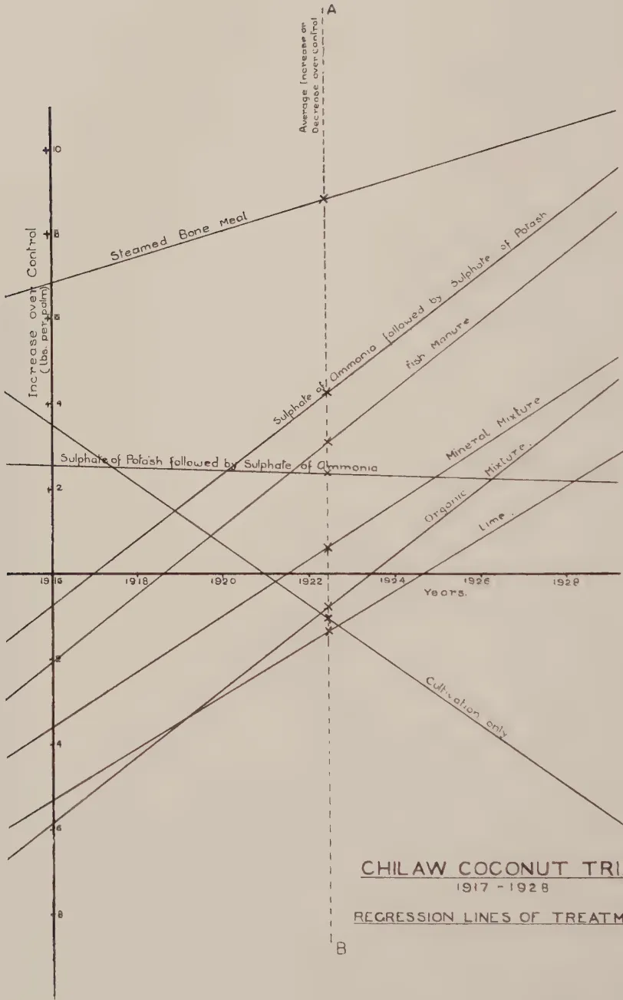
The graph plots 'Increase over Control (lbs. per bush)' on the y-axis (ranging from -8 to +10) against 'Years' on the x-axis (ranging from 1916 to 1928). Several regression lines are shown for different treatments:
A vertical dashed line at year 1922 is labeled 'Average Increase or Decrease over Control' at the top (point A) and 'B' at the bottom. The year 1922 is marked on the x-axis.
CHILAW COCONUT TRIALS
1917 - 1928
REGRESSION LINES OF TREATMENTS
223of certitude that, if the rainfall during one year falls appreciably below the average for a number of years, a decrease in the average yield of palms will occur during the next year.
Table IV shows the average difference in yield from the control, the regression coefficient and its standard error, and the values of both calculated and significant obtained from the data for each of the eight treatments. In the diagram are shown the 'regression lines' for the different treatments. These lines represent the straight lines most closely fitting the differences in yields from the control if the latter are plotted against time in years. The slope of these lines is a measure of the 'regression coefficient' or the rate of increase or decrease over the control. The greater the slope, the greater the rate of increase over the control and vice versa. The points marked with a cross on the line AB in the diagram indicate the average yields for the different treatments over the whole period.
An examination of tables I and IV and of the diagram will lead to the following conclusions:—
Plot 2. Cultivation only. This plot shows the lowest average yield and a significant rate of fall in yield of .72 lb. per annum. It is therefore evident that by cultivation alone average yields cannot be maintained under the soil and climatic conditions of the Chilaw trials. This is also seen from plot 12 where the cultivated plot has again the lowest yield of the plots on the gravelly type of soil.
Plot 3. Fish manure. The data from this plot indicate that yields are tending to rise. The rate of increase over the control, about .8 lb. per palm per annum, is not however definitely significant.
Plot 4. Steamed bone meal. This plot shows the highest average increase over the control. The increase has been maintained from the first year after manuring with this fertiliser. The yield, however, has not increased significantly since then.
Plot 5. Sulphate of ammonia. This plot received sulphate of potash till 1925 and sulphate of ammonia since 1925. Its average yield, which is higher than that of the control, appears to have been maintained till recently. The regression coefficient indicates that there is a very slight falling off in yield which is not significant.
Plot 6. Sulphate of potash. The plot received sulphate of ammonia up to 1925 and sulphate of potash from 1925. The trend of the yields is upwards, the rate of increase being at the rate of .75 lb. per annum. The rate of increase is not definitely significant, but nearly so. This would appear to point to the manurial value of sulphate of potash for coconuts on light soils, especially after a continuous application of a physiologically acid fertiliser like sulphate of ammonia.
224Plot 7. Mineral mixture. The data of this plot show that, though its initial fertility was lower than that of the control at the start of the experiments, the continued application of the mixture has produced, on the average, an increase in yield of .6 lb. per annum over the control. The rate of increase is also .6 lb. per annum, and this increase may be considered significant.
Plot 8. Lime. This plot indicates that, though its average is lower than that of the control, its yield is steadily increasing at the rate of about .6 lb. each year. This rate of increase is not definitely significant though nearly so. Lime does not appear to be beneficial to coconuts on gravelly soils. This would appear so from plot 11.
Plot 9. Organic mixture. The data of this plot indicate that, though the average yield of the plot is .7 lb. per palm lower than that of the control, the mixture is having a beneficial effect. The yield is definitely increasing at the rate of .74 lb. per annum. If this treatment were continued, the average yield of the plot would eventually be greater than that of the control. The initial fertility of the plot was evidently much lower than that of the control. The average yield of plot 13 also indicates the value of an organic mixture for coconuts on gravelly soils.
A statistical examination of such of the data obtained from the Chilaw Coconut Trials as can be examined indicates that,
(1) There is a significant positive correlation between the average yield of copra per palm in one year and the total rainfall during the previous year.
(2) The soil variation of the plots has a marked effect on yields, the average yield of the palms on the light gravelly soils being significantly less than that of palms on the medium sandy loams.
(3) By cultivation alone yields cannot be maintained. The yield of the cultivation plot has decreased at a significant rate.
(4) The fish plot appears to be steadily increasing its yield. The increase is not, however, definitely significant.
(5) The steamed bone meal plot which has the highest average yield is maintaining its yield. The continued application of this fertiliser is not, however, effecting any further significant increase of yield.
225(6) The addition of sulphate of potash to the plot that received sulphate of ammonia continuously has produced an increase in yield, which is not however definitely significant. The value of potash, especially after continuous manuring with nitrogen as sulphate of ammonia for coconuts on this type of soil appears to be indicated.
(7) The sulphate of ammonia plot which previously received sulphate of potash shows a slight downward trend in yield. The rate of decrease in yield is not significant.
(8) The mineral mixture, organic mixture and lime plots are steadily increasing their yields, the rate of increase being definitely significant in the two former and very nearly so in the latter. Lime does not appear to be beneficial to coconuts on gravelly soils.
I have to acknowledge my thanks to Mr. G. L. de Silva for having prepared the diagram for the press.
226Table I.
Copa per palm (lb.).
| Plot | 1917 | 1918 | 1919 | 1920 | 1921 | 1922 | 1923 | 1924 | 1925 | 1926 | 1927 |
|---|---|---|---|---|---|---|---|---|---|---|---|
| 1 | 27.0 | 27.9 | 16.5 | 20.2 | 25.7 | 22.9 | 23.5 | 27.5 | 34.9 | 31.9 | 26.4 |
| 2 | 32.6 | 24.4 | 19.9 | 22.8 | 28.4 | 23.9 | 19.7 | 24.9 | 24.5 | 26.5 | 23.6 |
| 3 | 30.1 | 24.6 | 19.9 | 24.5 | 27.7 | 28.1 | 21.9 | 24.8 | 32.9 | 31.6 | 37.8 |
| 4 | 35.8 | 32.6 | 25.1 | 31.1 | 34.9 | 34.2 | 32.1 | 32.5 | 35.3 | 36.4 | 40.1 |
| 5 | 32.6 | 23.8 | 18.0 | 26.7 | 29.7 | 25.4 | 22.5 | 31.8 | 40.1 | 31.4 | 25.8 |
| 6 | 28.7 | 24.5 | 19.0 | 28.6 | 31.4 | 26.4 | 26.1 | 31.4 | 34.1 | 31.4 | 35.8 |
| 7 | 25.1 | 20.1 | 14.5 | 23.0 | 28.8 | 22.6 | 23.0 | 32.9 | 37.4 | 28.9 | 27.07 |
| 8 | 22.3 | 21.2 | 13.3 | 18.4 | 27.6 | 21.3 | 20.9 | 30.4 | 30.3 | 27.1 | 29.2 |
| 9 | 24.2 | 17.7 | 12.4 | 20.4 | 28.3 | 22.8 | 25.9 | 27.9 | 33.6 | 25.7 | 27.7 |
| 10 | 16.8 | 8.0 | 5.7 | 11.8 | 17.8 | 10.4 | 8.1 | 18.0 | 24.1 | 26.1 | 17.7 |
| 11 | 16.0 | 7.5 | 5.2 | 13.6 | 22.0 | 10.5 | 5.7 | 11.3 | 10.4 | 12.3 | 10.5 |
| 12 | 15.5 | 10.4 | 5.9 | 14.4 | 18.5 | 11.1 | 8.4 | 15.1 | 12.9 | 7.6 | 4.4 |
| 13 | 14.5 | 10.2 | 6.2 | 15.8 | 10.9 | 12.6 | 10.5 | 21.1 | 26.1 | 12.4 | 10.5 |
| 14 | 17.6 | 12.9 | 9.8 | 15.0 | 16.1 | 11.7 | 11.3 | 18.5 | 17.1 | 10.5 | 20.7 |
| 15 | 10.1 | 8.1 | 4.6 | 13.3 | 21.1 | 9.1 | 9.1 | 21.3 | 18.5 | 12.6 | 9.5 |
| 16 | 19.0 | 16.7 | 14.3 | 18.0 | 21.8 | 17.9 | 20.4 | 29.0 | 27.5 | 26.8 | 25.6 |
| Year. | Rainfall (inches). | Year. | Average yield per palm (lb.) |
|---|---|---|---|
| 1916 | 64.7 | 1917 | 23.0 |
| 1917 | 41.7 | 1918 | 18.2 |
| 1918 | 51.8 | 1919 | 13.2 |
| 1919 | 55.0 | 1920 | 19.9 |
| 1920 | 69.5 | 1921 | 24.4 |
| 1921 | 44.7 | 1922 | 19.4 |
| 1922 | 48.6 | 1923 | 18.1 |
| 1923 | 61.9 | 1924 | 24.9 |
| 1924 | 73.6 | 1925 | 27.5 |
| 1925 | 77.3 | 1926 | 23.7 |
| 1926 | 62.9 | 1927 | 23.3 |
| 1927 | 69.1 | 1928 | 24.1 |
| 1928 | 71.0 | 1929 | — |
Correlation coefficient +.788
For , (found) = 4.05
(significant) = 3.17
227
Table II.
| Plot. | Type of soil. | Treatment. | Yield of copra per palm (lb.) | |
|---|---|---|---|---|
| 1928. | Average (1917 to 1928.) |
|||
| 1 | Light sandy loam. | Clean weeding. Boga sown in 1926. | 20.9 | 25.4 |
| 2 | " | Cultivation only. Disc-harrowing 5.8 times. | 20.6 | 24.3 |
| 3 | " | Fish manure @ 6 lb. per palm. | 39.5 | 28.6 |
| 4 | " | Steamed bone meal @ 8 lb. per palm. | 40.6 | 34.2 |
| 5 | " | Sulphate of potash @ 3 lb. per palm till 1925 and then sulphate of ammonia @ 4 lb. per palm. | 25.0 | 27.7 |
| 6 | " | Sulphate of ammonia @ 4 lb. per palm till 1925 and then sulphate of potash @ 3 lb. per palm. | 38.1 | 29.6 |
| 7 | Sandy loam. | Mineral mixture. | 28.4 | 26.0 |
| 8 | " | Lime @ ton per acre. | 26.0 | 24.0 |
| 9 | Clay loam. | Organic mixture. | 30.3 | 24.7 |
| 10 | " | Control till 1923. Millicent estate Mixture since 1923 | 22.7 | 15.6 |
| 11 | Light gravelly loam. | Varying treatments. Lime @ ton per acre since 1925. | 9.9 | 11.2 |
| 12 | " | Cultivation only. | 4.9 | 10.8 |
| 13 | " | Organic mixture. | 18.5 | 14.1 |
| 14 | " | Cultivation to 1923. Millicent estate mixture since 1923. | 21.9 | 15.3 |
| 15 | " | Varying treatments since 1922. | 11.1 | 12.4 |
| 16 | Light sandy loam. | Clean weeded. | 27.4 | 22.0 |
| (By store) | ||||
| Average of Plots 1 to 8 and 16. | ||||
| Average of Plots 11 to 15. | ||||
| Difference | ||||
| Standard error of difference | ||||
| Treatment. | Average per | Difference | Regression | Standard | t Calculated. |
Significant. (P = .05). |
|---|---|---|---|---|---|---|
| palm. lb. |
from control. lb. |
coefficient. lb. |
error of reg. coeff. lb. |
|||
| 1. Control up to 1928. | 25.4 | |||||
| 2. Cultivation. | 24.3 | -1.1 | -.72 | .32 | 2.25 | 2.23 |
| 3. Fish manure. | 28.6 | +3.2 | +.78 | .50 | 1.56 | 2.23 |
| 4. Steamed bone meal. | 34.2 | +8.8 | +.29 | .42 | 0.70 | 2.23 |
| 5. Sulphate of potash to 1925 and sulphate of ammonia since 1925. |
27.7 | +2.3 | -.028 | .28 | 0.10 | 2.23 |
| 6. Sulphate of ammonia to 1925 and sulphate of potash since 1925. |
29.6 | +4.2 | +.74 | .42 | 1.76 | 2.23 |
| 7. Mineral mixture. | 26.0 | +0.6 | +.62 | .30 | 2.08 | 2.23 |
| 8. Lime. | 24.0 | -1.4 | +.59 | .32 | 1.84 | 2.23 |
| 9. Organic mixture. | 24.7 | -0.7 | +.74 | .36 | 2.06 | 2.23 |
V. CANAGARATNAM
ASST. MANAGER, EXPERIMENT STATION, PERADENIYA.
ROSELLE was first grown on the Experiment Station, Peradeniya, during 1924-1925 with a view to studying its possibilities as a fibre crop. The results obtained were inconclusive and indicated that further trials and investigations were necessary before a definite opinion could be formed of its value. Circumstances did not permit the continuation of the work in the succeeding two years. A second trial was undertaken on a half-acre block of cultivated land during 1928 and details of the trial are presented in this report.
Preliminary cultivation.—The plot was treated with farm-yard manure at the rate of thirty-two cart loads per acre. The manure was evenly spread over the whole area, after which the land was ploughed with an iron plough and disc-harrowed. As the plot was still weedy, it was ploughed and harrowed a second time.
The field was lined and seeds were dibbled 6 inches apart in rows feet distant, at the rate of 24 lb. per acre. The seed rate appeared to be too heavy and resulted in clumps of seedlings over a large area which tended to over-crowding. The consequent struggle of the plants for light and air hindered their robust development. They were more or less leggy and the seedlings that fared badly in the struggle remained stunted in growth to the last. A thinner seed-rate and broadcast sowing would have been more appropriate and conducive to better results. After-cultivation consisted of one weeding, when the crop was young. The quick growth of the seedlings smothered practically all the weeds.
The crop was sown in the last week of May and was ready for harvesting by the second week of October—one hundred and thirty-five days after sowing. The heights attained by the plants before flowering were:—
| Maximum | 10 ft. |
| Medium | 8 ft. 10 in. |
| Minimum | 4 ft. 9 in. |
and immediately after flowering
| Maximum | 10 ft. 3 in. |
| Medium | 9 ft. 4 in. |
| Minimum | 5 ft. 1 in. |
The distribution of rainfall in inches during the period was as follows:—
| May 25-31 | ... | 35 |
| June | ... | 6.57 |
| July | ... | 13.62 |
| August | ... | 9.70 |
| September | ... | 3.03 |
| October 1-9 | ... | 4.41 |
| Total | ... | 37.68 |
The crop was harvested immediately after indications of flowering were noticed.
Harvesting.—The stems were cut with sharp pruning knives as near to the ground as possible and kept in heaps over the field as in the case of paddy. They were then tied into bundles of convenient size without stripping the leaves from the stems. It was found that an able-bodied cooly could cut and bundle 1,500 lb. of stems per day. Plantain fibre was used as cordage for bundling the stems.
Retting.—Great difficulty was experienced for want of a suitable place for retting the stems. No channels of running water that were in use on the Station could be utilized without polluting the water. But for this hardship, the expenses under this head could have been reduced by half.
A safe place in the river (Mahaweli Ganga) where the current was not strong was chosen. The stems were transported there and made into larger and more compact bundles before they were weighed down with big stones into the river. It was found that heavy weights had to be put on the bundles before they could be submerged. The process was laborious and involved a good deal of labour. Another difficulty was experienced which entailed additional trouble. The bundles that had settled down at the bottom of the river were soon covered with silt and sand and it proved difficult to lift them out of the water. Besides, the stems were found to be coated with mud and had to be washed clean before peeling off the fibre. The muddy retting was mainly responsible for the dingy colour and dustiness of the fibre.
The stems were examined after five days' immersion. Not till the twenty-sixth day was the retting found to have progressed far enough to facilitate smooth and ready peeling of the fibre in strips. Even after this long interval the fibre towards the butt end of the stem did not, as is usual, peel off readily. It is worthy of note that the period of retting was not considered too long by the Imperial Institute, London, to which samples of fibre were sent for examination.
Peeling.—After the twenty-sixth day, the bundles were pulled out and the fibre was hand-stripped and washed.
231The retted stems could not be dealt with in one day and some remained for the following day. On the second day the peeling was found to be much smoother and easier than on the first day. The hanks of fibre were wrung out to remove the water and were hung out in strings to dry and bleach.
Preparation for the market.—The fibre was then brushed to remove the remnant of the dry green-stuff adhering to the stems, to comb out the hanks and to give it a better finish. Brushing was done with hand with the help of a small pruning knife. The clean fibre was then graded on the basis of length and lustre and made into compact bales of 100 lb. each. It was found that in the process of brushing and grading the wastage of fibre amounted to 4 per cent.
Packing.—The bales were wrapped in pieces of jute hessian which were cut, according to the dimensions of the bales, into three pieces, one for the girth and two for the sides, and the ends were stitched as tightly as possible on the surface. This method of packing was found convenient and satisfactory and seemed to answer the purpose well.
Commercial value.—The fibre was submitted to a firm of merchants in London (Messrs. Wigglesworth & Co., Ltd.) who furnished the following report on the quality and value:—
“The fibre is 6 to 7 feet long, dingy in colour, of fair strength, contains barky spots. We value it at £28 per ton, first mark Calcutta jute at £30 to £31 per ton. We are of opinion that the dingy colour and dustiness have been caused by retting in muddy water and possibly the material is under-retted which would account for the barky spots and the poor colour. We should think that with additional retting in fine or running water the material could be improved about a couple of pounds per ton.
There is a considerable market for such material and the cultivation might be undertaken on a substantial scale, with the prospects of ready sale in Dundee market as a substitute for Calcutta jute and on other markets as a rope-making fibre.”
Cost of cultivation per acre.
| Preparatory cultivation | ... | Rs. | 15-75 |
| Manuring | ... | „ | 7-40 |
| Seeds and sowing | ... | „ | 9-60 |
| Weeding | ... | „ | 9-62 |
| Harvesting | ... | „ | 21-00 |
| Retting | ... | „ | 29-40 |
| Peeling | ... | „ | 76-22 |
| Brushing and grading | ... | „ | 18-50 |
| Rs. | 187-49 | ||
| Total weight of stems per acre | 42,888 lb. |
| Total weight of dry fibre | 1,194 lb. |
| Percentage of fibre | 2.4 |
| Price realised by sale of ton of fibre | Rs. 189-00 |
| Cost of cultivation | ,, 187-48 |
| Rs. 1-52 | |
Remarks.—As has been observed and for reasons stated above the out-turn can by no means be considered a fair average. In Peradeniya yields of 1,970 lb. and 1,617 lb. of clean fibre per acre have been obtained in the past. With judicious cultivation and more experience, it should be possible to increase the yield at least by 50 per cent.
There is no doubt the cost of production in this instance was high. With better facilities for retting such as are always found on estates or with specially constructed cement or wooden troughs which should be inexpensive, where the stems could be conveniently dealt with, the cost of retting and peeling could be reduced by 30-40 per cent. In the previous trial, the cost of retting and peeling amounted to Rs. 84-00 per acre and even this figure was considered too high. It is obvious that the present cost of Rs. 105.62 is too high and the cause of this increased cost has already been explained.
It is pointed out in the valuation report that by longer retting in clean running water the price of the material can be increased. This can easily be done and the additional value thus obtained can be set off against the shipping charges which have not been taken into account in the above calculation. If the yield can be improved by 50 per cent. and the cost of cultivation reduced by 30 per cent., as would seem to be possible and not unreasonable to expect, the cultivation of roselle may prove to be worth while.
233AT a meeting of the Executive Committee of the Rubber Research Scheme, held on July 19th, 1929, a sub-committee was appointed to consider the policy and procedure to be adopted by the Rubber Research Scheme in matters connected with rubber budding and selection of high-yielding trees. This sub-committee consisted of the following gentlemen:—Dr. W. Small, M.B.E. (Chairman), The Hon'ble Mr. J. W. Oldfield, Messrs, C. E. A. Dias, L. P. Gapp, L. Lord, R. A. Taylor and J. Mitchell (Secretary). Mr. H. W. Roy Bertrand was subsequently invited to join the committee but unfortunately he was unable to attend any of its meetings. Meetings were held on July 26th, August 7th and August 22nd and the following resolutions were adopted by the members of the committee:—
(a). That a preliminary selection of high-yielding trees should be made on all interested estates and that the selection should, in the first place, be made by the superintendent from information in his possession supplemented by a measurement of the yields of latex for a period of 12 days' tapping. The Committee considered that all the trees should be tapped on the same days and if possible by the same tapper.
(b). That when the preliminary selection had been made the selected trees should be inspected by a responsible officer of the Rubber Research Scheme or of the Department of Agriculture.
(c). That the trees so selected should then be tapped as far as possible by the same tapper, the latex be coagulated after every tapping, and the coagulum be converted to dry rubber.
(d). That the tapping and collection of rubber should be carried on for a full tapping season and the records for each tree should be kept in a special book for the periodical inspection of a responsible officer.
(e). That all incomplete tapings (owing to rain, etc.) should be excluded from the records.
(f). That a record should be kept of the height and length of the cut at the beginning and end of the tapping season.
234(g). That when the records for each tree were complete each should be expressed as "yield per tapping" and a final selection be made on that basis.
(a). That records of yields which were being taken on estates should be periodically inspected by a responsible officer.
(b). That an officer of the conductor type should be trained in this work and should at regular intervals visit all estates on which mother-tree records were being taken.
That only those trees which showed a yield of not less than five times the average yield of the trees of the field in which they were situated should be considered as mother-trees.
The Chairman informed the Committee that in spite of numerous attempts made by the Rubber Research Scheme to induce superintendents to take yield records and to give assistance in the matter of finding the highest yielders in Ceylon the response had been disappointing. He further stated that special attention had been drawn to this matter in the editorial of the July number of The Tropical Agriculturist, and that the Rubber Growers' Association had circularised members on the subject.
The committee decided:—
(a). That the matter should be brought to the notice of the Ceylon Estates Proprietary Association and Mr. Oldfield kindly undertook to impress upon the members of that Association the importance of securing records from as many estates as possible.
(b). That a leaflet or circular should be prepared showing what was being done in other rubber-growing countries and what should be done in Ceylon.
It was resolved that records of dry rubber to the end of the present tapping season should be obtained from all the mother-trees of which material was available at Nivitigalakele and that a selection from these should be made in March 1930.
A discussion took place on the question of continuing the testing of mother-trees which had subsequently developed brown bast and of trees which periodically suffered from attacks of bark rot. The majority favoured the view that brown bast incidence could be greatly minimised by increasing the interval between
235tappings and by taking thicker parings and that bark rot was preventable. It was considered that the present knowledge of the inheritability of such diseases as those specified was insufficient to justify the cessation of tests of mother-trees which had developed these diseases. Again, it was considered that the problem was one which should be studied by the research stations.
(a). That arrangements should be made for the supervision by responsible officers of the Rubber Research Scheme or the Department of Agriculture of tests being made on estates should the estates express a desire for such supervision.
(b). That where such supervision is exercised the results of tappings on the estates should be published periodically by the Rubber Research Scheme or the Department of Agriculture for general information.
(a). That the results of tests of mother-trees on experiment stations should be published periodically and that officers should be empowered to issue approval certificates where the results are favourable.
(b). That when such trees have been under properly supervised tests for a period of one year the Rubber Research Scheme or the Department of Agriculture should, where results are favourable, specify approval of such mother-trees for the benefit of the estates owning the mother-trees and the guidance of the general public.
(a). That where bud-wood from estates is not supplied free of charge bud-wood from desirable mother-trees should be purchased.
(b). That all requests for bud-wood from estates should be accompanied by an undertaking not to dispose of any of the products of such bud-wood until after two years' test tappings of the budded plants had been completed.
(c). That all estates which supply free bud-wood should be kept informed of the results of the tapping tests of buddings from their mother-trees to enable them to lay down multiplication bud-wood nurseries should the tests give favourable indications.
236(d). That estates supplying free bud-wood should be informed that the experiment stations might desire to use such bud-wood or subsequent products of such bud-wood for the establishment of seed gardens.
(a). That where bud-wood is purchased the experiment stations should be at liberty to dispose of the products in any way that may be considered desirable.
(b). That products of bud-wood supplied free should be disposed of in accordance with the conditions stated in sections 8b and 8c.
That seed gardens with single clones, with two clones, and with four clones should be established for seed selection purposes, and that seed and leaf characters of all selected mother-trees should be recorded by responsible officers for identification purposes.
(a). The Chairman reported that the land situated at Paspolakande was not available as an experiment station and that it would be necessary to secure land elsewhere. Mr. Dias stated that advertisements had appeared in the official Gazette offering land for sale in the Moragala District and Mr. Oldfield stated that land was available in the neighbourhood of the land offered to the Anglo-Ceylon and General Estates Co., Ltd. in exchange for St. Coomb's Estate. The committee resolved that the Government should be approached on the matter and that particulars of the Gazette advertisements should be obtained. It was further resolved that, if possible, the land should be secured on lease at a nominal rental.
(b). The Chairman informed the committee that advertisements asking for blocks of land to be used as seed gardens had not proved successful and it was necessary to reconsider the question. It was suggested that blocks of land might be made available on the Government Experiment Stations at Wariapola, Anuradhapura, Kanniyai, Ambalantota, Allai and Bataata and the committee resolved that an enquiry into these possibilities should be made. Mr. Lord reported that on account of the dry conditions in certain of these stations it would be necessary to determine if rubber would grow satisfactorily. It was also resolved that the Conservator of Forests be approached with a view to securing blocks of land in re-afforestation areas. It was further resolved that an appeal should be made to estate agencies for assistance in this matter.
237The committee approved of the suggestion that 25 per cent. of the bud-wood and of seed produced on the experimental stations and seed gardens should be reserved for small-holders should such a demand arise.
The committee resolved that Messrs. Taylor and Lord be instructed to prepare as soon as possible a leaflet on the lines of the Department of Agriculture leaflet No. 43, embodying the decisions arrived at by the sub-committee and laying down the methods to be adopted by estates in the selection of high-yielding trees. It was further suggested that recommendations should be made for the management of bud-wood multiplication nurseries and that the leaflet should indicate that advice could be obtained from the Department of Agriculture or the Rubber Research Scheme.
On behalf of the committee,
J. MITCHELL,
Organising Secretary,
Rubber Research Scheme.
Peradeniya,
September 11th, 1929.
R. K. S. MURRAY, A.R.C.SC.,
MYCOLOGIST,
RUBBER RESEARCH SCHEME (CEYLON).
Adisease of young shoots of bud-grafted Hevea which may prove to be important has recently been studied. Specimens of diseased green shoots were received almost simultaneously from two different estates in the Kalutara district. In both cases the shoot had evidently been attacked about three inches from the tip, and when the specimens were received the disease was manifested as a sunken discoloured area about six inches long on one side of the shoot. Both shoots bore the fructifications of Gloeosporium alborubrum.
Cultures made from the margins of the diseased tissue yielded two fungi, Phytophthora sp. and Gloeosporium alborubrum. Inoculations with a pure culture of the Phytophthora on young green shoots of nursery seedlings established this fungus as the cause of the disease. Both wounded and unwounded shoots were inoculated and in all cases infection took place while the control plants remained healthy. Phytophthora sp. was re-isolated in pure culture from one of the unwounded inoculated shoots, and further inoculations on unwounded shoots confirmed the causation of the disease.
On the inoculated shoots the disease first appeared as blackish, watery-looking, vertical streaks. After six days these had merged into black sunken areas 1 to 2 inches in length, on the surface of which sporangiophores and sporangia of Phytophthora could be seen with a microscope. Subsequently the disease spread up and down the shoots and secondary fungi gained entrance. A month after the inoculations had been made the shoots had died back for a distance of about 1 foot from the tip. Owing probably to the abnormally dry weather conditions obtaining at this time the die-back was checked at this stage, and new shoots developed below the affected parts.
It is not known whether this disease will prove to be a serious factor in retarding the development of young buddings. The fungus spreads by means of sporangia; these produce zoospores whose motility and germination are dependent on the presence of water. The disease, like others caused by species of Phytophthora, is therefore a wet-weather disease, and its importance will probably depend to a large extent on weather
239conditions. The inoculation experiments referred to above indicate that a spell of dry weather tends to check the progress of the disease. The Phytophthora itself may be confined to the succulent portions of the shoot, but there is the danger of introducing Diplodia and other fungi which may kill back the entire plant.
The fungus causing the disease has not been identified with any of the previously described tropical species of Phytophthora. It apparently differs morphologically from P. palmivora which, under the former name of P. faberi, is well known as the cause of secondary leaf-fall and other diseases of Hevea. The size and shape of the sporangia, which are taxonomic features, are however appreciably variable according to external conditions such as nature and age of culture, humidity, etc., so that the fungus will have to be grown under strictly standard conditions before it can be compared with other species.
The disease has only been reported as occurring in nature on buddings, but the inoculations show that seedlings are also susceptible to attack. The only reference that has been found to a similar disease in other countries is a note by Weir. He describes a disease which attacks the young bud-shoot at its extremity and mentions a Phytophthora as a possible causal agent. In the specimens examined in Ceylon the disease originated, not at the extremity of the shoot, but some inches below it. The Rubber Research Scheme would be glad to receive specimens of diseased shoots conforming to the symptoms described above.
Diseased shoots should be cut off well below the affected part and burnt. Spraying with Bordeaux Mixture has on one estate given effective control.
Weir, J. R. A blight of young buddings. Quarterly Journal, Rubber Research Institute of Malaya, Vol 1, Nos. 1 and 2, 1929.
240PEOPLE who work much among the cultivators generally understand that the Indian plough bullock always turns to the left and never to the right. This is one of the apparently simple obstacles one meets and dismisses lightly, but can never surmount; because, no matter how well trained our farm bullocks and ploughmen are, nor how well, under our eye, the cattle turn right or left as required, no sooner do the men and cattle get away to their own or a cultivator's field than they turn left at once and all the time. On our land the responsibility is ours and the danger also; but on their own land they take no risks, but believe in "safety first" and their cattle turn only to the left.
In small plots with cattle turning left, inevitably ploughing is done from the outside to the middle if the plough allows; and a mouldboard that throws to the right not only allows but encourages this. So Indian cattle and a right-hand throwing plough plough the fields outwards time after time, till the centre is a hollow and the edge a containing rim; and the consequent water-logging and deterioration of the soil is laid at the door of the English plough, and we are told in all seriousness that an English plough spoils the land.
This is one of the eastern customs which many have tried to break and all have failed and will fail, at any rate for a few more centuries, and the only sound way to deal with it at present is to accept it and supply a plough to suit it. As far as I know, there is no difference whatever between a plough throwing right and the same plough built to throw left. Produced on the same scale, one is as cheap as the other; and the work done by both is the same, if equally intelligently used. But with bullocks that turn to the left, a right-throwing plough is never intelligently used; while a left-throwing one can only with difficulty be used otherwise. For India, therefore, all mouldboard ploughs supplied should be left-handed, to turn earth to the left; and with them the ryot will find it very difficult to do other than plough his plots up to the middle, with consequent improvement of drainage and crop bearing capacity. This is the first and fundamental consideration to be kept in mind.
The second is the necessity for some form of compensation for the difference between the furrow width and the draught width. We all know that ploughing is a slow, laborious process, that costs heavily in proportion to other agricultural operations; but that if done thoroughly, it is well worth while because at one operation the whole bulk of earth to the depth we are working is cut off from below, thoroughly shaken and broken, and turned over on the top of weeds and rubbish. One ploughing is the equivalent of 6 or 8 "chases" with the country plough or of 2 or 3 cultivations. But only if it is done properly.
* Extract of an article on "Agricultural Implements suitable for the use of the Indian Cultivator" by A. P. Cliff, B.A., Deputy Director of Agriculture, Western North Behar Range, in The Agricultural Journal of India, Vol. XXIII, No. 2, March, 1928.
241For a mouldboard plough to plough properly it must tend to run with its share flat across the bottom of the furrow being cut, at an even depth, and in a direction parallel to the last furrow, at a distance generally of 7 or 8 inches from it. For work with cattle in small plots we have already decided (vide Agri. Journal of India, Vol. XXII, Part IV, pages 288-289) that short pole draft is essential; so that little steering control is possible without sideways tilting; and such tilting must be avoided if feasible, as only when the plough is running flat and true is it doing its proper work. The first step obviously is to get the cattle to move in exactly the right direction and parallel to our furrow. There is only one line to guide them and that is the last furrow. On one side of that is a mass of clods and loose earth over which the bullock will wander in any direction but the right one, and on the other is the unploughed surface, generally a mass of weeds and rubbish. We must therefore make one bullock go in the furrow, when the other will keep his distance on the unploughed land. Any plough bullock will go quietly along a furrow with very little coaxing, though I defy anyone to drive a pair of ryot's bullocks straight along a given line, without that furrow to guide them.
The common plough yoke of India is 4 to 5 ft. long and the common distance between the necks of the bullocks is 40 to 48 inches. Half that, which is the distance from the neck of the furrow bullock to the centre of yoke, where the plough is hitched, is 20 to 24 inches. But a plough furrow is only 7 inches to 8 inches, rarely 9 inches wide; so that though the hitch is 20 inches away from the last furrow, the plough must not be more than 9 inches, a difference of 11 inches between draft width and furrow width. In western ploughs this difference is taken up partly by the length of beam and chain, and partly by the hake set across the end of the beam; but our draft must be a short pole and the hitch on the yoke only 6 or 7 feet from the plough.
There is commonly used on Behar plantations a cheap copy of the old Hindustan plough which has short pole draught and of which the pole is directly over the landslide of the plough. When the bullock is in the furrow the plough tries to be 18 inches away, and is forced back to the furrow by tilting it over on to its landslide, to the detriment of the ploughing. Then the bullock swings away on to the land and the plough comes back into the last furrow. Not for two minutes together is the plough running square and true in its proper place and doing its proper work, because when the bullock is in the furrow, the only guiding line, the plough is too far away from it.
Some simple form of offset device is required on the plough, so that the pole is attached 8 to 9 inches sideways from the landslide.
The bullock is in the last furrow, the yoke hitch is 18 inches to the right, the pole is parallel to the work, and the plough 9 inches to the left of the base of the pole, is in its true position for easy and proper work. Without some such offset no mouldboard plough with short pole draught can be made to do good work; and ploughing, unless reasonably well done, is not worth doing. A few cultivations are simpler and cheaper.
It is possible to take up this difference between ploughing width and draft width by setting the pole at a small angle to the line of the plough; but this method is unsound because a lengthening or shortening of the hitch on the pole, to suit higher or lower bullocks or to plough deeper or shallower, alters also the width of furrow taken; and with large bullocks a narrower furrow is taken than with small ones, the reverse of what would be desirable. The pole should be parallel to the line of the plough, but 9 inches to the side of it; and it is desirable to make this offset simply adjustable so that for transport along roads, the offset can be closed up, the yoke brought back along the pole to lift the share and point off the ground, and the plough slid home on its heel lying snugly between the heels of the bullocks.
242It is most important to make the offset attachment an integral part of the body of the plough. Normally, all such ploughs are sold in the Dehat without woodwork, and the construction of the plough body should be such that the pole can only be attached in one obvious way; as, if the ryot is left any choice as to how the pole can be attached, he is certain to make the wrong choice. One cannot be too careful to make such a device absolutely foolproof, as even on Government farms it is common for an implement to be put together wrongly if such a course is possible, and then it is often condemned without a fair trial.
It will be remembered that in discussing the ridge plough I suggested that such a plough might be sold, without handles or pole, to be fastened to the front vertical column of the Behar 3/5-tined cultivator. Similarly, the single mouldboard plough might well be constructed to bolt firmly to the left side bar of the frame of that cultivator. Two holes in the plough frame in a horizontal line, to register with two corresponding holes in the cultivator frame side member, and an extra vertical piece bolted firmly to the body of the plough and passing up and in, to the bolt where the pole and handles cross, provide an attachment rigid vertically and longitudinally. The cultivator frame itself provides the required offset. I have tested thoroughly such a plough and find it quite a practical outfit; and again it is thought that the saving of pole and handles so possible, would be thoroughly appreciated by the ryot.
A final point apparently not generally appreciated is that the downward pressure on a plough point, i.e., the pressure that makes the point dig itself into the ground, is less when the plough has short pole draft than when it has the usual beam and chain draft. To compensate for this, in any plough sold for use with short pole draft, the angle which the share and point makes with the line of the bottom of the plough, generally the lower side of the landslide, should be very appreciably greater than is usually the case; otherwise the plough must be run on its nose, and the tail of the landslide and the rear of the mouldboard will be up out of the earth and the plough will not sit in the furrow securely nor turn the earth properly.
The writer advocates the following essentials for any plough to be marketed for the use of the Indian ryot:—
Apart from these, such a plough should be of the short-breasted, wide-throwing, breaking type, capable of ploughing reasonably well any class of land from sandy loam to heavy clay, and it will be then met sufficiently well the requirements of the whole country. Two sizes are advisable:—
No. 1 would plough 6 or 7 inches deep and 8 or 9 inches wide and No. 2 about 4 to 5 inches deep and 5 or 6 inches wide, but the same body, offset and landslide, and point would suit both, the only difference being that No. 2 would require a narrower share and correspondingly narrower, though just as wide throwing, mouldboard.
243IN order to aid in their propaganda work, the Madras Agricultural Department has put on the road a travelling motor exhibition. This was considered likely to prove of more use than an exhibition train, such as that used in the Punjab, for the reason that in South India railways are comparatively few and they do not always pass through the densely populated districts. Moreover, it is only at big towns and centres that facilities exist for halting a big train in a siding without dislocating the traffic. It was, therefore, decided to try the experiment of a motor exhibition van which could be taken from village to village in the interior of the districts and brought to the very doors of the ryots.
The first unit, which is of an experimental nature, consists of a van with a Graham Bros. 1½-ton chassis with a 137-inch wheelbase and a 4-cylinder 24 h.p. engine. On this chassis is mounted a body divided into two main parts. The front portion consists of the driver's cab capable of carrying the driver and two passengers. The rear portion is a compartment divided into three sections. The central section is utilized for general storage and carries ploughs, implements, sprayers, and big samples. Movable shelves can be fitted wherever required and these shelves can be converted into tables and benches when an exhibition is being given. The sides of the van are divided lengthways into two portions. The lower portion on either side folds down into a horizontal position to form a display counter. The upper portion folds up out of the way and forms a shelter to the counter. When these sides are opened up they expose on either side of the van a series of shelves for the display of exhibits. To protect these and keep them from shifting when the van is in motion light wood detachable panels are fitted in front of them. These panels fit into slots on the roof of the van and have hooked supports behind to hold them in place and here they serve as a screen on which posters, etc., can be displayed.
In addition to this there is a caravan in which the assistants in charge of the exhibition can travel and live. The chassis of this is a Graham Bros. model 1C with a 137-inch wheelbase and a 4-cylinder 24 h.p. engine on which is mounted a body divided into three sections. The front section consists of two parts, a driver's seat and, on the off side, a compartment to carry a magic lantern. This lantern can project through a hole to the left of the windscreen or sideways and it is operated from the driver's seat. It is worked from a special battery charged from the motor engine. The sheet is fixed to a small railing running round the rear end of the exhibition car.
The second compartment consists of a seat capable of carrying four persons in comfort with doors on either side. The rear portion consists on the rear side of two sleeping berths. The lower one is a permanent fixture underneath which are cupboards for clothing, etc. The upper can be folded out of the way. On the off side is a fold-in table and two chairs. Behind the forward chair is a large cupboard for books, etc. Three drop glass windows are provided on the off side and two at the rear and either side of the door. A luggage rail runs the whole way along the roof on which tents, etc., can be stored.
* By R. D. Anstead, C.I.E., M.A., Director of Agriculture, Madras, in The Agricultural Journal of India, Vol. XXIV, Part III, May 1929.
244The cost of these vans was approximately Rs. 8,000 and Rs. 6,500, respectively.
As regards the exhibits which the vans carry these cover the whole range of the department's work. Each is fitted up in a small showcase with a glass front which fits into its own section and these can be changed at will depending upon the locality visited and the nature of the exhibition it is desired to give. A large number of posters are carried and these are displayed on boards on the roof and are attached to the front of the counters. Tables and benches are formed of the shelves in the centre of the van and these are arranged round it to display other samples, etc. The whole, therefore, spreads out into an extensive display and it takes approximately an hour to get it ready or pack it all up ready to move on as the case may be.
Ploughing demonstrations, etc. are given at the same time and in the evening lectures are delivered with the aid of the lantern. The caravan goes ahead and chooses a suitable site and makes the necessary arrangements, advertises the coming of the exhibition, and so on, and in due course the big van arrives and the display is spread out. Halts of one to three or four days are made depending on the size of the place visited and the occasion. Local fairs and festivals are attended and the utmost use is made of all shandais, conferences, and gatherings of all sorts. Two assistants at least accompany the vans and of course there is a reliable driver for each.
The actual running cost, including the pay of the driver is estimated at six annas a mile, and 15 per cent. depreciation has been allowed.
This unit is looked on as experimental and it will be improved on in future models as experience is gained. Future vans will probably be made lighter for instance, but on the whole the unit has proved very satisfactory indeed, and it has met with a great welcome and response from the cultivators and it is in constant demand.
It was due to the initiative and keenness of His Excellency Lord Goschen, the Governor of Madras, that this van was obtained, and at his suggestion it was exhibited on the Government House lawns during the garden party Their Excellencies gave to the members of the Indian Science Congress in December. There it was the centre of attraction during the course of the afternoon and His Excellency himself aided the demonstrator in charge in explaining it and the exhibits which it contained and showed himself a keen and well-informed exponent of the art and science of agriculture in South India.
245OBSERVATIONS made by the writers and by Mr. P. G. Joshi, Superintendent of the Ganeshkhind Botanical Gardens, Kirkee, show that perfectly formed papaya fruits containing no seeds are of not uncommon occurrence. During the months August 1923 to February 1924, these appeared in the Ganeshkhind Botanic Gardens orchard on eleven female trees in the following numbers :—
| Month. | Number of fruits harvested. | Number seedless. | |
|---|---|---|---|
| 1923— | |||
| August | ... | 14 | 0 |
| September | ... | 40 | 0 |
| October | ... | 26 | 4 |
| November | ... | 21 | 8 |
| December | ... | 9 | 7 |
| 1924— | |||
| January | ... | 18 | 9 |
| February | ... | 14 | 11 |
The question arose : "Is this lack of seeds due to lack of pollination, or has there been pollination but no fertilisation ?" To settle this point, flowers on pure female trees were bagged with paper envelopes or cloth bags. In every case of a bagged flower, a fruit was formed, containing no seeds and smaller in size than a fruit developing seeds in the usual way.
In the Montgomery District in the Punjab, there are no plants of papaya for a radius of 200 miles from the Government farm, and on this farm female papayas (there were no male ones retained) all developed fruits, and these were seedless.
It appears then that the fruit as apart from the seed of the papaya tree can develop without pollination. Davies confirms this, but Popenoe and Higgins state the contrary. It is just possible that as both these observers refer to conditions outside India, while Davies and ourselves refer to Indian conditions, that this may be the explanation of the disagreement.
We have also proved that partial pollination (i.e., pollinating only certain branches of the stigma) results in partial fruit setting, the carpels corresponding to the pollinated stigma branches alone setting seed. The weight of fruit is, as one would expect, more or less proportionate to the number of seeds developed.
None of our observations bear out the contention of Higgins and Holt that a parthenocarpic tendency is inherited. Moreover, on one and the same tree are found fruits (a) fully seeded, (b) with seeds at the stigmatic end, (c) without seeds.
We conclude therefore that for the trees which we have observed in India seedlessness is due to lack of pollination and to nothing else, and that the weight and size of the fruits is proportional to the number of seeds set. If it is desired to produce seedless papayas, all that it is necessary is to exclude pollen.
* By G. S. Cheema and P. G. Dani in The Agricultural Journal of India, Vol. XXIV, Part III, May 1929.
246THE urine of farm animals is as valuable for manurial purposes as the dung. Unfortunately this fact is unknown or ignored by the majority of farmers in this country, writes R.S.M. in a British paper "Farm Feeding."
The urine of livestock contains extremely valuable fertilizing properties, but its collection and storage involves the construction of a special system of drains and tanks. Agriculturists in some European countries are far in advance of British farmers in this matter. In Germany huge cemented tanks are to be found on most large farms and the carts which spray the liquid over the land are a common sight. The evil of the great wastage in this country is mitigated to some degree by the provision of a plentiful supply of absorbent litter which is afterwards applied to the soil. Moreover, the more rigorous German climate makes it necessary for the cattle to be kept in sheds for several months of the year. Hence an outlay on tanks, etc., is repaid quicker than in milder climates where even in winter the cattle are allowed to graze for many hours each day.
The phosphatic and potassic salts present in the urine of cattle, unlike those present in the dung, require little or no change in their form before they are ready to stimulate plant life; in other words, liquid manure is much quicker than dung in its action. Sir Daniel Hall throws some interesting light on the properties of liquid manure in his volume on Fertilizers and Manures. "Roughly speaking," he says, "the richer the food the greater the proportion that is digestible," and it is the digestibility of the food which determines the proportion between the fertilizing salts contained in the slow-acting dung and those present in the quick-acting urine. It is shown in this work that in decorticated cotton cake there is 7 per cent. nitrogen of which 87 per cent. finds its way into the urine. In hay there is 1.5 per cent. nitrogen; 50-60 per cent. of this is present in the urine. These figures show that not only the fertilizing value of the urine is very high when the cattle are fed on rich food, but also that even when comparatively poor foods are used the urine is at least as rich in nitrogen as the dung. Thus, on a farm where the liquid manure is not collected and utilized and where rich concentrated cakes are fed, the loss to the farmer is very much greater than on a farm where the diet consists of roots and hay.
Notwithstanding all these facts the farmer should proceed with caution before he decides to involve the quite considerable outlay necessary for the installation of drains and tanks. In the opinion of the Ministry of Agriculture, however, this outlay would be recovered in a very few years, especially in the case of stalled cattle. Dilution by rain water increases the cost of handling and consequently reduces the profit. The Department publishes a leaflet (No. 382) on liquid manure tanks, describing in detail the construction of a suitable system.
* From The Agricultural Journal of India, Vol. XXIV, Part III, May 1929.
247THE annual bill of the United Kingdom for livestock products is, states a report published by the Empire Marketing Board, four times as great as the bill for wheat. Each one of us, it has been estimated, spends nearly £8-2-0 a year on these products, but only a little over £2 on wheat. Grass is the chief raw material from which dairy produce, meat, wool and hides are made, and the new report—"The Composition of Pastures," by Dr. J. B. Orr, Director of the Rowett Research Institute, Aberdeen—describes the remarkable work now being done to improve, and even to double, the yield of the Empire's grasslands.
The report states that an Empire-wide campaign of research is now in full swing. Scientists in all parts of the Empire, particularly in South Africa, Australia, New Zealand, Scotland, Southern Rhodesia, Kenya, and the Falkland Islands, are co-operating to find out how the Empire's pastures may be made more productive. It has been discovered that one of the main reasons why stock does not flourish on some pastures—and even wastes away on them—is that the grass is poor in mineral elements. Research is opening up wide possibilities of getting round this obstacle to increasing the natural wealth of the Empire.
* Supplied by the Empire Marketing Board. The Department of Agriculture is prepared to lend Dr. Orr's report (E.M.B. 18) to Ceylon residents who are interested in the subject of pasturage.
248THE future of agriculture is bound up with the development of the fertiliser industry. Farming without manures, the exploitation of the natural resources of the soil, is characterised by large areas and declining yields; it is only rendered possible by cheap and abundant labour on one hand or a high degree of mechanisation on the other. The first step towards more permanent conditions and a higher level of production is usually the fixation of atmospheric nitrogen by the agency of leguminous crops, aided when necessary by the addition of phosphate and of lime. The use of animal manures follows. Then in the search for nitrogen, farmyard manure is enriched by the feeding of purchased feeding stuffs. At this stage the need for further phosphate becomes insistent, and we reach the level of the best British farming of the 'seventies.
In recent years in the older countries this system has been pushed one stage further by the scarcity of land, the introduction of crops which make a great demand on the soil, and the necessity of securing a high production per acre. On the lighter soils, particularly, the need for more potash makes itself felt, and for certain crops in the rotation further nitrogen is still necessary. For a time, by-product sulphate of ammonia and Chile nitrate of soda could provide the necessary nitrogen. In the War period and the years which followed, various processes of fixing atmospheric nitrogen were greatly developed, thus laying the foundation of an abundant supply of cheap nitrogenous fertilisers in all industrialised countries.
In the meantime, numerous field experiments in Great Britain and abroad showed that an increased amount of nitrogenous fertilisers could be consumed by farmers with advantage, particularly if supported by appropriate additions of phosphoric acid and potash. It was further shown that grass-land in intensively farmed countries, which hitherto had received phosphates, if it was manured at all, could also benefit from nitrogenous fertilisers under certain systems of management. The supplying of a range of nitrogenous manures suited to the varied conditions of Great Britain and the Empire and the working out of their economical and effective use in practice, is the task which the Imperial Chemical Industries, Ltd., has taken up. As the source of supply there is the huge synthetic nitrogen plant at Billingham-on-Tees, turning out as its main products sulphate of ammonia and nitro-chalk, the former being our leading source of nitrogen as regards tonnage and range of application, with almost a century of experience and experiments behind it; the latter, a new product consisting of ammonium nitrate and chalk, which combines the advantages of nitric and ammonia nitrogen. There is, however, the staff and equipment at Billingham to manufacture further products as the need for them may arise; and one may expect to see in due course the production of ammonium sulphate, and by inclusion of the natural potash salts, a range of high grade mixed fertilisers similar to those which are becoming a feature of the continental market.
To develop the old and to investigate the new an expert agricultural service is a necessary complement to the producing organisation. Imperial Chemical Industries' Research Station at Jealott's Hill, near Maidenhead, which was opened on June 28, is designed to meet this need. It consists of a farm of some 440 acres, and a well-equipped laboratory containing the usual departments for the study of the many-sided problems of plant and
* By H. V. Garner in Nature of July 6, 1929.
249animal nutrition. The arable portion of the farm is devoted to experiments of modern design to test the effects of fertilisers on farm crops, with special reference to the use of I.C.I. products. In addition to the fertilisers mentioned above, ammonium chloride, urea, nitrate of lime, ammonium phosphate, and the German compound fertiliser 'nitrophoska', are being used. Experiments are also in view on the manuring of horticultural crops, a line of inquiry which has been somewhat neglected in the past but will assume greater importance in future. The grass-land is largely used for investigations and demonstrations of intensive systems of pasture management in which the use of generous applications of nitrogenous fertilisers is an essential feature.
This conversion of cheap inorganic nitrogen into the protein of young grass, and its further conversion into a saleable form by the agency of live stock, raises a series of practical and scientific problems which are being attacked energetically on the farm and in the laboratories at Jealott's Hill. The effects of the manurial treatment on the pasture itself from its botanical and chemical aspects is being worked out; the measurement of the digestibility of the resulting grass to various classes of stock is under investigation; while the question of how best to utilise the surplus which may arise in favourable seasons is being examined. At certain times of the year, hay-making is uncertain and troublesome. Two alternative methods are being tested: the making of grass silage, and the artificial drying of short young grass, which opens up the possibility of the production of home-grown concentrates or grass cakes. The latter process, the outcome of the work of the Cambridge School, is being followed out in detail, using experimental drying plants of various designs.
On the practical side, there are the agricultural problems which arise when any considerable change in management is made. These are being studied on the farm, and as they are successfully met they are demonstrated to visiting parties of farmers. Thus there are demonstrations of the utilisation of intensively treated grass by young cattle (baby beef) and by dairy cows. In each case a food relatively rich in protein is required. The economic side of these trials and the demonstrations is kept uppermost, and there is a special staff to work out and present this essential information.
With Jealott's Hill as a centre for direction, advice and examination of results, there extends a range of experimental centres and demonstration areas in Great Britain, the Empire, and in foreign countries where fertiliser tests are being made on practically the whole range of economic crops. In most cases the work is done in close co-operation with the existing official agricultural institutions both at home and abroad, and it is the policy of I.C.I. to make these contacts as real as possible.
Nearly seven hundred guests representing every branch of agriculture and its related industries were present on June 28 for the official opening of the Research Station by the Right Hon. J. H. Thomas, Lord Privy Seal. The weather conditions were ideal, and the arrangements for the comfort of the visitors were admirably carried out. The importance of agricultural research in Great Britain and in the Empire, and the part which the new research station is to play in this sphere, were set out by the Chairman, the Right Hon. Lord Melechett, and by other directors of the Imperial Chemical Industries, Ltd.
The Jealott's Hill Station will take up its work with the good wishes of the other institutions already established in the field of agricultural research.
250THE following yields of the hundred highest yielding rubber trees at Heneratgoda, which have been supplied by Mr. K. J. A. Sylva, the Assistant Curator of the Heneratgoda Botanic Gardens, are published here, both as a matter of general interest and for record purposes. Many of the yields are good and a few are outstanding. It must be noted, however, that many of the trees are over forty years old and five are over fifty. Moreover, many of the trees are very favourably situated environmentally and wide spacing or position on the edge of a plantation may have had a large effect upon yield. Fifteen of the trees have been selected for testing on the Iriyagama Division of the Experiment Station, Peradeniya. These are Nos. 2, 24, 400, 401, 445, 440, 439, 411, 75, 82, 49, 26, 21, 140 and 203.
The general decrease in yield during the second year is due to heavier rainfall. The rainfall records will be found at the end of the yield tables.
Many of the trees were pollarded (to supply budwood) in December 1927. This has reduced yields for both years, but more so during the second year.
| Plantation No. |
No. of tree | Girth at 3 feet |
Measurement of cut inches |
Mean no. of latex vessel row |
April 1927 to March 1928 |
Equivalent in lb. and oz |
April 1928 to March 1929 |
Equivalent in lb. and oz. |
|||||||||
|---|---|---|---|---|---|---|---|---|---|---|---|---|---|---|---|---|---|
| feet | ins | Biscuit | Scrap. | Biscuit | Scrap. | Biscuit | Scrap. | Biscuit | Scrap. | ||||||||
| grammes | grammes | lb | oz. | lb | oz. | grammes | grammes | lb | oz. | ||||||||
| 1 Planted 1877. |
2* | 10 | 9 | 46 | 54.7 | 22250 | 786 | 49 | 2 | 1 | 12 | 14105 | 1540 | 31 | 2½ | 3 | 6½ |
| 24*† | 6 | 6 | 26 | 23.7 | 20159 | 2213 | 44 | 3 | 4 | 14 | 12703 | 1391 | 28 | ½ | 3 | 1½ | |
| 9* | 8 | 9 | 36 | 21.0 | 9803 | 169 | 21 | 1 | - | 6 | 7467 | 123 | 16 | 8 | - | 4½ | |
| 11* | 6 | 7½ | 28 | 27.3 | 8696 | 310 | 19 | 3 | - | 11 | 5139 | 266 | 11 | 5½ | - | 9½ | |
| 30 | 8 | 8 | 37 | 18.0 | 7401 | 336 | 16 | 5 | - | 12 | 4905 | 495 | 10 | 13½ | 1 | 1½ | |
| 2 Planted 1886. |
140* | 7 | — | 29½ | 25.3 | 13161 | 433 | 29 | ¾ | - | 15 | 8067 | 864 | 17 | 13 | 1 | 14½ |
| 203 | 5 | 10½ | 24 | 42.0 | 13130 | 261 | 26 | 12½ | - | 9½ | 6614 | 488 | 14 | 9½ | 1 | 1½ | |
| 85* | 7 | 11½ | 33 | 25.7 | 11566 | 910 | 25 | 8½ | 2 | — | 10935 | 1193 | 24 | 2½ | 2 | 10½ | |
| 249*† | 4 | 6½ | 19 | 22.7 | 10415 | 137 | 23 | — | - | 4½ | 8323 | 121 | 18 | 6 | - | 4½ | |
| 86 | 6 | 8 | 27 | 39.7 | 10028 | 284 | 22 | 2 | - | 10 | 6354 | 470 | 14 | ½ | 1 | ¾ | |
| 149* | 5 | 1 | 20 | 13.7 | 9978 | 296 | 22 | ½ | - | 10½ | 5555 | 540 | 12 | 4½ | 1 | 3½ | |
| 88 | 9 | 11 | 28 | 36.0 | 8376 | 253 | 18 | 8 | - | 9 | 5381 | 226 | 11 | 14½ | - | 8 | |
| 269* | 3 | 11 | 17 | 17.0 | 8651 | 103 | 19 | 1½ | - | 3½ | 5592 | 120 | 12 | 5½ | - | 4½ | |
| 102 | 5 | 9½ | 24 | 13.3 | 8425 | 393 | 18 | 9½ | - | 14 | 5720 | 451 | 12 | 9½ | - | 16½ | |
| 232* | 6 | 10 | 29 | 24.7 | 8414 | 376 | 18 | 9½ | - | 13½ | 6523 | 341 | 14 | 6½ | - | 12½ | |
* Pollarded December, 1927.
† Brown-Bast.
251Dry Rubber.| Plantation No. |
No. of tree | Girth at | Measurement of cut [feet ins. inches] |
Mean no. of latex vesicle row |
April 1927 to March 1928 |
Equivalent in lb. and oz |
April 1928 to March 1929 |
Equivalent in lb. and oz. |
||||
|---|---|---|---|---|---|---|---|---|---|---|---|---|
| 3 feet | Biscuit | Scrap. | Biscuit | Scrap. | Biscuit | Scrap. | Biscuit | Scrap. | ||||
| grammes | grammes | lb. oz. | lb. oz. | grammes | grammes | lb. oz. | lb. oz. | |||||
| 3 Planted 1886. |
400* | 9 — | 35½ | 41.0 | 19840 | 663 | 43 12½ | 1 7½ | 15441 | 1238 | 34 1½ | 2 11½ |
| 401* | 7 11 | 32 | 32.3 | 16337 | 443 | 36 1 | - 15½ | 11199 | 585 | 24 11½ | 1 4½ | |
| 445* | 9 10 | 39½ | 28.7 | 16101 | 410 | 35 8½ | - 14½ | 12499 | 776 | 27 9½ | 1 11½ | |
| 440* | 6 2 | 25 | 32.7 | 14200 | 147 | 31 5½ | - 5½ | 9445 | 190 | 20 13½ | - 6½ | |
| 439* | 8 3 | 34 | 39.0 | 14014 | 356 | 30 15 | - 12½ | 8735 | 357 | 19 4½ | - 12½ | |
| 411* | 5 9½ | 24½ | 32.0 | 13230 | 573 | 29 3½ | 1 4½ | 7203 | 844 | 15 14½ | 1 14 | |
| 362* | 5 — | 21 | 22.7 | 11454 | 437 | 25 4½ | - 15½ | 10053 | 311 | 22 3½ | - 11½ | |
| 355* | 6 4 | 26 | 31.0 | 11440 | 417 | 25 4 | - 14½ | 9061 | 486 | 20 — | 1 1½ | |
| 441 | 5 4 | 21½ | 29.7 | 10946 | 69 | 24 2½ | - 2½ | 7674 | 129 | 16 15½ | - 4½ | |
| 455*† | 5 8 | 24 | 26.3 | 10751 | 597 | 23 11½ | 1 5 | 5050 | 97 | 11 2½ | - 3½ | |
| 471* | 6 3 | 26½ | 19.0 | 10859 | 884 | 23 15½ | 1 15½ | 6536 | 176 | 14 18½ | - 6½ | |
| 334 | 5 11½ | 26 | 24.3 | 10665 | 257 | 23 8½ | - 9 | 8541 | 247 | 18 13½ | - 8½ | |
| 464*† | 6 8 | 27 | 31.3 | 10389 | 748 | 22 15 | 1 1½ | 8302 | 863 | 18 5½ | 1 14½ | |
| 476 | 6 5 | 25 | 19.0 | 10215 | 159 | 22 8½ | - 5½ | 7915 | 105 | 17 7½ | - 3½ | |
| 377* | 6 2 | 26 | 23.0 | 9678 | 274 | 21 5½ | - 9½ | 4178 | 373 | 9 3½ | - 13½ | |
| 376* | 6 6½ | 26½ | 20.0 | 9723 | 148 | 21 7½ | - 5½ | 8266 | 128 | 18 4 | - 4½ | |
| 316* | 6 1½ | 26 | 25.3 | 9635 | 734 | 21 4½ | 1 10 | 5742 | 981 | 12 11 | 2 2½ | |
| 396 | 6 4 | 22½ | 23.0 | 9864 | 77 | 21 12½ | - 2½ | 8857 | 183 | 19 8½ | - 6½ | |
| 366* | 6 2 | 24½ | 23.0 | 9840 | 76 | 21 11½ | - 2½ | 7581 | 126 | 16 11½ | - 4½ | |
| 318 | 7 8 | 31 | 27.7 | 9517 | 186 | 21 ¼ | - 6½ | 6183 | 340 | 13 10½ | - 12½ | |
| 373* | 5 ½ | 22½ | 26.7 | 9435 | 85 | 20 13½ | - 3 | 5507 | 111 | 12 2½ | - 4 | |
| 444 | 7 3 | 27½ | 30.3 | 9344 | 374 | 20 10 | - 13½ | 7101 | 505 | 15 11 | 1 1½ | |
| 423 | 5 — | 22 | 23.0 | 9365 | 237 | 20 10½ | - 8½ | 6678 | 196 | 14 12 | - 7 | |
| 431* | 7 9 | 28 | 17.0 | 8981 | 408 | 19 13½ | - 14½ | 2569 | 771 | 5 10½ | 1 11½ | |
| 305 | 6 5 | 26 | 22.0 | 9390 | 818 | 20 11½ | 1 13 | 7871 | 948 | 17 6 | 2 1½ | |
| 371 | 6 8½ | 27½ | 31.7 | 8935 | 333 | 19 11½ | - 11½ | 7023 | 283 | 15 8½ | - 10½ | |
| 383 | 7 6 | 30 | 37.3 | 8928 | 536 | 19 11½ | 1 3 | 5473 | 705 | 12 1½ | 1 9 | |
| 416 | 4 17½ | 17½ | 18.7 | 8844 | 153 | 19 8½ | - 5½ | 4744 | 215 | 10 7½ | - 7½ | |
| 420 | 5 — | 22 | 24.7 | 8801 | 369 | 19 6½ | - 13 | 6476 | 436 | 14 4½ | - 15½ | |
| 424 | 6 4½ | 26 | 24.0 | 8561 | 245 | 18 14½ | - 8½ | 6672 | 252 | 14 11½ | - 9 | |
| 384 | 4 7 | 18½ | 23.0 | 8578 | 65 | 18 15½ | - 2½ | 5792 | 124 | 12 12½ | - 4½ | |
| 421 | 5 — | 22 | 18.0 | 8707 | 356 | 19 3½ | - 12½ | 7166 | 438 | 15 13½ | - 15½ | |
| 437* | 5 9 | 24 | 29.7 | 8476 | 126 | 18 11½ | - 4½ | 4914 | 185 | 10 13½ | - 6½ | |
| 354 | 3 10½ | 16 | 19.0 | 8576 | 231 | 18 15 | - 8½ | 5936 | 325 | 13 1½ | - 11½ | |
| 395 | 5 11 | 24½ | 26.3 | 8996 | 62 | 19 13½ | - 2 | 8809 | 124 | 19 7½ | - 4½ | |
| 406 | 6 6 | 26 | 19.7 | 8651 | 176 | 19 1½ | - 6½ | 5841 | 311 | 12 14½ | - 11½ | |
| 435* | 6 4 | 26½ | 22.3 | 8108 | 549 | 17 14½ | 1 3½ | 5776 | 514 | 12 12½ | 1 2½ | |
| 397 | 6 11½ | 29 | 30.3 | 7601 | 242 | 16 12½ | - 8½ | 6240 | 260 | 13 12½ | - 9½ | |
| 370 | 6 8 | 27½ | 22.0 | 7262 | 315 | 16 ½ | - 11½ | 4376 | 393 | 9 10½ | - 14 | |
| 340 | 4 8 | 20 | 21.0 | 7284 | 298 | 16 1½ | - 10½ | 5658 | 139 | 12 8 | - 5 | |
| 4 Planted 1897. |
82* | 8 ½ | 32 | 22.3 | 13903 | 89 | 30 11 | - 3 | 12579 | 108 | 27 12½ | - 3½ |
| 75 | 8 10 | 36 | 25.0 | 1467 | 360 | 31 ¼ | - 12½ | 14228 | 523 | 31 6½ | 1 2½ | |
| 71 | 7 8 | 31 | 37.0 | 10880 | 1038 | 24 ¼ | 2 4½ | 10495 | 1127 | 23 2½ | 2 8 | |
| 70* | 7 11 | 34 | 24.3 | 10193 | 210 | 22 8 | - 7½ | 7632 | 244 | 16 13½ | - 8½ | |
| 48*† | 6 1 | 26 | 26.0 | 9639 | 523 | 21 4½ | 1 2½ | 2472 | 493 | 5 7½ | 1 1½ | |
| 80 | 5 8 | 24 | 20.0 | 7626 | 366 | 16 13½ | - 13 | 8161 | 434 | 18 ¼ | - 15½ | |
| 73 | 7 11½ | 34 | 20.7 | 7306 | 505 | 16 2 | 1 1½ | 7383 | 518 | 16 4½ | 1 2½ | |
| 68 | 5 6 | 24 | 23.3 | 6760 | 217 | 14 14½ | - 7½ | 6577 | 155 | 14 8½ | - 5½ | |
| 51 | 5 5 | 23 | 18.3 | 6522 | 59 | 14 6½ | - 2 | 5659 | 105 | 12 8 | - 3½ | |
| 66 | 5 5 | 22 | 18.7 | 6147 | 92 | 13 9 | - 3½ | 5980 | 104 | 13 3½ | - 3½ | |
| 56 | 5 11 | 24 | 21.0 | 5930 | 647 | 13 1½ | 1 6½ | 4054 | 672 | 8 15½ | 1 7½ | |
| 81 | 6 7 | 26 | 14.3 | 5736 | 238 | 12 10½ | - 8½ | 6022 | 273 | 13 4½ | - 9½ | |
| 74 | 7 3½ | 30 | 24.7 | 5903 | 464 | 13 ¼ | 1 ½ | 6738 | 584 | 14 14½ | 1 4½ | |
| 83 | 6 — | 27 | 13.7 | 5728 | 100 | 12 10½ | - 3½ | Blown down | ||||
| 53 | 4 8½ | 20 | 25.3 | 5090 | 170 | 11 3½ | - 6 | 5709 | 232 | 12 9½ | - 8½ | |
| 63 | 5 9 | 24 | 18.0 | 4848 | 182 | 10 11½ | - 6½ | 3493 | 207 | 7 11½ | - 7½ | |
| 72 | 6 11½ | 26 | 28.0 | 4631 | 315 | 10 3½ | - 11½ | 5134 | 326 | 11 5½ | - 11½ | |
| 60 | 5 9½ | 24 | 26.3 | 4603 | 872 | 10 2½ | 1 15 | 4531 | 756 | 10 — | 1 10½ | |
| 58 | 5 8 | 22 | 21.3 | 4627 | 282 | 10 3½ | - 10 | 4152 | 377 | 9 3½ | - 13½ | |
| 57 | 4 7 | 18 | 15.3 | 4573 | 85 | 10 1½ | - 3 | 3972 | 108 | 8 12½ | - 3½ | |
* Pollarded December, 1927.
† Brown-Bast.
252Dry Rubber.| Plan- tation No. |
No. of tree | Girth at 3 feet |
Measurement of c t feet ins. inches |
Mean no. of latex vessel row |
April 1927 to March 1928 |
Equivalent in lb. and oz. |
April 1928 to March 1929 |
Equivalent in lb. and oz. |
||||||||
|---|---|---|---|---|---|---|---|---|---|---|---|---|---|---|---|---|
| feet | ins. | Biscuit | Scrap. | Biscuit | Scrap. | Biscuit | Scrap. | Biscuit | Scrap. | |||||||
| grammes | grammes | lb. oz. | lb. oz. | grammes | grammes | lb. oz. | lb. oz. | |||||||||
| 5 Planted 1910. |
47* | 3 | 11 | 17 | 16.0 | 7112 | 521 | 15 | 11 | 1 | 2 | 6081 | 191 | 13 | 6 | 6 |
| 48 | 3 | 7 | 16 | 18.7 | 6835 | 165 | 15 | 1 | - | 5 | 5890 | 166 | 13 | — | 5 | |
| 39 | 4 | 2 | 17 | 14.3 | 4771 | 300 | 10 | 8 | - | 10 | 3436 | 289 | 7 | 9 | 10 | |
| 49 | 4 | 6 | 20 | 14.7 | 4341 | 334 | 9 | 9 | - | 11 | 3426 | 403 | 7 | 9 | 14 | |
| 15 | 3 | — | 11 | 14.7 | 4201 | 85 | 9 | 4 | - | 3 | 2753 | 153 | 6 | 1 | 5 | |
| 37 | 2 | 11 | 12 | 11.3 | 4040 | 65 | 8 | 14 | - | 2 | 2979 | 96 | 6 | 9 | 3 | |
| 9 | 3 | 6 | 15 | 14.0 | 3986 | 121 | 8 | 12 | - | 4 | 3500 | 137 | 7 | 11 | 4 | |
| 28 | 4 | 1 | 17 | 12.3 | 3850 | 175 | 8 | 8 | - | 6 | 3644 | 180 | 8 | 3 | 6 | |
| 44 | 3 | 9 | 17 | 15.3 | 3795 | 355 | 8 | 6 | - | 12 | 1969 | 398 | 4 | 5 | 14 | |
| 33 | 4 | 1 | 18 | 15.0 | 3366 | 146 | 7 | 7 | - | 5 | 2217 | 251 | 4 | 14 | 9 | |
| 21 | 4 | 2 | 18 | 16.7 | 2867 | 38 | 6 | 5 | - | 1 | 2350 | 76 | 5 | 3 | 2 | |
| 11 | 3 | 10 | 17 | 15.3 | 2775 | 58 | 6 | 2 | - | 2 | 3204 | 73 | 7 | 1 | 2 | |
| 40 | 3 | 2 | 14 | 15.0 | 2684 | 278 | 5 | 14 | - | 9 | 1925 | 292 | 4 | 4 | 10 | |
| 18 | 3 | 8 | 16 | 16.7 | 2686 | 127 | 5 | 15 | - | 4 | 2811 | 105 | 6 | 3 | 3 | |
| 41 | 4 | 2 | 16 | 16.0 | 2680 | 261 | 5 | 14 | - | 9 | 2202 | 158 | 4 | 14 | 5 | |
| 6 Planted 1910. |
26* | 4 | 11 | 22 | 22.3 | 8828 | 67 | 19 | 7 | - | 2 | 6986 | 105 | 15 | 6 | 3 |
| 21 | 3 | 11 | 17 | 21.7 | 6411 | 460 | 14 | 2 | 1 | 4 | 6556 | 540 | 14 | 7 | 3 | |
| 10 | 4 | 3 | 18 | 21.7 | 6172 | 595 | 13 | 10 | 1 | 5 | 6824 | 784 | 15 | 1 | 11 | |
| 8 | 3 | 9 | 16 | 16.3 | 4682 | 234 | 10 | 5 | - | 8 | 3791 | 322 | 8 | 6 | 11 | |
| 6 | 3 | 1 | 13 | 19.7 | 4392 | 47 | 9 | 11 | - | 1 | 3056 | 62 | 6 | 12 | 2 | |
| 15 | 3 | 11 | 16 | 24.0 | 3949 | 51 | 8 | 11 | - | 1 | 3348 | 59 | 7 | 6 | 2 | |
| 29 | 3 | 9 | 15 | 15.7 | 3801 | 122 | 8 | 6 | - | 4 | 3389 | 155 | 7 | 7 | 5 | |
| 9 | 4 | — | 16 | 14.0 | 3181 | 60 | 7 | 4 | - | 2 | 3307 | 67 | 7 | 4 | 2 | |
| 17 | 3 | 1 | 12 | 17.7 | 3161 | 67 | 6 | 15 | - | 2 | 2819 | 78 | 6 | 3 | 2 | |
| 27 | 4 | 2 | 17 | 15.0 | 3120 | 39 | 6 | 14 | - | 1 | 2505 | 80 | 5 | 8 | 2 | |
* Pollarded December, 1927.
RAINFALL RECORDS.| Inches. | Days. | Inches. | Days. | ||||
|---|---|---|---|---|---|---|---|
| 1927 | April | 20.49 | 11 | 1928 | April | 9.14 | 13 |
| May | 23.66 | 26 | May | 4.57 | 16 | ||
| June | 8.83 | 25 | June | 7.98 | 18 | ||
| July | 2.18 | 9 | July | 16.32 | 10 | ||
| August | 1.35 | 6 | August | 6.45 | 12 | ||
| September | 13.60 | 19 | September | 3.82 | 11 | ||
| October | 12.37 | 16 | October | 28.43 | 25 | ||
| November | 10.44 | 13 | November | 17.89 | 25 | ||
| December | 3.25 | 4 | December | 8.66 | 14 | ||
| 1928 | January | 5.68 | 7 | 1929 | January | 5.89 | 7 |
| February | 3.00 | 5 | February | 1.64 | 3 | ||
| March | 5.56 | 5 | March | 7.30 | 10 | ||
| 110.41 | 146 | 138.09 | 164 | ||||
A curry stuffs cultivation competition was organised in the Matale district during the year 1928-29.
The competition did not arouse much interest, probably due to the small margin of profit gained by the cultivation, as compared with the cultivation of vegetables.
There were three entrants for the competition, of whom one had taken great pains and his garden was looking particularly well.
The gardens were judged by the Divisional Agricultural Officer, Central, with another officer of the Department, and Mr. U. B. Lowley was adjudged the winner of the prize of Rs. 50/-.
THE above competition was organised with the object of encouraging home gardens of both old and present boys of the above school. Prizes to the value of Rs. 15/- were offered by Mr. L. Archdale, Superintendent of Lassahena Estate.
Only old boys competed. There were 27 entrants. The gardens were systematically planted and well cultivated.
The final judging was done by an Agricultural Instructor, and the following were adjudged prize-winners:—
| K. V. Podiappuhamy of Deraniyagala | ... | ... | Rs. 10.00 |
| R. B. E. Ran Banda of Diagala | ... | ... | ,, 5.00 |
A competition among school gardens for cultivating medicinal herbs was held in the North-Western Division for the third year in succession. Prizes to the value of Rs. 100/- were offered by Veda Mudaliyar W. Daniel Fernando Waidyasekera of Panadura.
The points considered were: number of varieties planted, size of each bed, growth of the plants, their cultivation, selection and usefulness.
The following schools were adjudged prize-winners:—
| Kobeigane V.M.S. | ... | ... | Rs. 25.00 |
| Kirindewa V.B.S. | ... | ... | ,, 15.00 |
| Nakkawatte V.B.S. | ... | ... | ,, 12.50 |
| Mennekulama V.M.S. | ... | ... | ,, 10.00 |
| Bannehepola V.M.S. | ... | ... | ,, 7.50 |
| Galmuruwa V.G.S. | ... | ... | ,, 15.00 |
| Walpaluwa V.M.S. | ... | ... | ,, 15.00 |
A vegetable garden competition was organized in two divisions in the Matale South area during the year 1928-29.
In both divisions there was a fair number of entrants. The gardens were well planted and looked after and the results obtained were very satisfactory.
The gardens were judged by the Divisional Agricultural Officer, Central, and another officer of the Department. In one of the sections two of the gardens tied for the first place, and in the other two of the gardens tied for the second place.
The following were adjudged prize-winners :—
| 1. | Mudiyanse of Padiwita | ... | ... | Rs. 30.00 |
| 2. | { Punchiappuhamy of Padiwita | ... | ... | „ 20.00 |
| { Siththappuwa of Padiwita | ... | ... | „ 20.00 |
| 1. | { Seena Majoodu of Raitalawa | ... | ... | Rs. 30.00 |
| { Hawadiya of Raitalawa | ... | ... | „ 30.00 | |
| 2. | S. Nugu Lebbe | ... | ... | „ 20.00 |
IN 1925 the late Sir Ganga Ram, Kt. C.I.E., M.V.O., R.B., Lahore, with that generosity for which he is now so well known, handed over to the Punjab Government a sum of Rs. 25,000/- for the endowment of a prize to be awarded for a discovery, or an invention, or a new practical method which will tend to increase agricultural production in the Punjab on a paying basis. The property has been vested in the Treasurer of Charitable Endowment for the Punjab and is administered by a Managing Committee.
The interest accruing from the property is payable to the Managing Committee.
The prize is known as the Maynard Ganga Ram prize and is to be awarded every three years provided a satisfactory achievement is reported to the Managing Committee. It will be of the value of Rs. 3,000/- and the competition is open to all throughout the world. Government servants are also eligible to compete for it.
Wide publicity was given in 1926 and 1927 to the proposed award by advertisements in newspapers, both in India and abroad, and by other means, and applications were invited by the 1st January, 1929. The response has, however, been extremely poor and consequently it has been decided to extend the time for submission of the applications to the Director of Agriculture, Punjab, up to 31st December 1929. The Managing Committee reserves the right of withholding or postponing the prize if no achievement of sufficient merit is submitted.
The Punjab with its many rivers, its fertile soil and warm sun, has great possibilities for agricultural development, which is of the utmost importance as practically the whole population of the province, both urban and rural, depend either directly or indirectly on its agriculture.
255ANIMAL DISEASE RETURN FOR THE MONTH
ENDED 30th SEPTEMBER, 1929.
| Province, &c. | Disease | No. of Cases up to date since Jan. 1st 1929 | Fresh Cases | Recoveries | Deaths | Balance III | No. Shot |
|---|---|---|---|---|---|---|---|
| Western | Rinderpest | 2963 | 325 | 396 | 2309 | 17 | 241 |
| Foot-and-mouth disease | 691 | 20 | 691 | . | ... | ... | |
| Anthrax | ... | ... | ... | ... | ... | ... | |
| Piroplasmosis | 2 | ... | 1 | 1 | .. | ... | |
| Rabies. (Dogs) | 1 | ... | ... | ... | ... | 1 | |
| Colombo Municipality | Rinderpest | 1782 | 71 | 214 | 1545 | 23 | ... |
| Foot-and-mouth disease | 307 | 1 | 293 | 14 | ... | ... | |
| Anthrax | 3 | ... | ... | 3 | ... | ... | |
| Rabies (Dogs) | 24 | 3 | ... | ... | ... | 24 | |
| Cattle Quarantine Station | Rinderpest | 51 | ... | 32 | 19 | ... | ... |
| Foot-and-mouth disease | 42 | ... | 42 | ... | ... | ... | |
| Anthrax (Goats) | 129* | 12 | ... | 129 | ... | ... | |
| Central | Rinderpest | 46 | ... | 1 | 44 | ... | 1 |
| Foot-and-mouth disease | 1030 | 13 | 1024 | 2 | 4 | ... | |
| Anthrax (Goats) | 2 | 2 | ... | 2 | ... | ... | |
| Haemorrhagic Septicaemia | 3 | ... | ... | 3 | ... | ... | |
| Rabies (Dogs) | 27 | 2 | ... | 23 | ... | 4 | |
| Southern | Rinderpest | 27 | 27 | 2 | 17 | 8 | ... |
| Foot-and-mouth disease | 2014 | ... | 1958 | 56 | ... | ... | |
| Anthrax | ... | ... | ... | ... | ... | ... | |
| Northern | Rinderpest | 4 | ... | 3 | ... | ... | 1 |
| Foot-and-mouth disease | 157 | ... | 87 | 70 | ... | ... | |
| Anthrax | ... | ... | ... | ... | ... | ... | |
| Eastern | Rinderpest | ... | ... | ... | ... | ... | ... |
| Foot-and-mouth disease | 8006 | .. | 7851 | 155 | ... | ... | |
| Anthrax | ... | ... | ... | ... | ... | ... | |
| North-Western | Rinderpest | 2037 | 287 | 89 | 976 | ... | 972 |
| Foot-and-mouth disease | 117 | 10 | 107 | ... | 10 | .. | |
| Anthrax | ... | ... | ... | .. | ... | ... | |
| Piroplasmosis | 5 | ... | 5 | ... | ... | ... | |
| North-Central | Rinderpest | ... | ... | ... | ... | ... | ... |
| Foot-and-mouth disease | 124 | 43 | 87 | 2 | 35 | ... | |
| Anthrax | ... | ... | ... | ... | ... | ... | |
| Uva | Rinderpest | ... | ... | ... | ... | ... | ... |
| Foot-and-mouth disease | 377 | ... | 375 | 1 | ... | 1 | |
| Anthrax | ... | ... | ... | ... | ... | ... | |
| Haemorrhagic Septicaemia | 1 | ... | ... | 1 | ... | .. | |
| Sabaragamuwa | Rinderpest | 424 | 23 | 44 | 376 | ... | 4 |
| Foot-and-mouth disease | 4516 | 21 | 4394 | 115 | 7 | ... | |
| Anthrax | ... | ... | ... | ... | ... | ... | |
| Haemorrhagic Septicaemia | 14 | ... | 1 | 13 | ... | ... |
* One case in a buffalo
G. V. S. Office,
Colombo, 10th October, 1929.
G. W. STURGESS,
Government Veterinary Surgeon.
SEPTEMBER, 1929.
| Station | Temperature | Mean Humidity % |
Mean amount of Cloud 0=clear 10=overcast |
Mean Wind Direction During Month |
Daily Mean Velocity Miles |
Rainfall | |||
|---|---|---|---|---|---|---|---|---|---|
| Mean Daily Shade ° |
Difference from Average ° |
Amount Inches |
No. of Rainy Days | Difference from Average Inches |
|||||
| Colombo | |||||||||
| Observatory- | 81.0 | +0.8 | 80 | 7.6 | SW | 147 | 10.02 | 23 | + 3.74 |
| Puttalam - | 81.8 | +0.6 | 76 | 6.9 | SW | 184 | 5.30 | 12 | + 4.70 |
| Mannar - | 83.0 | 0 | 76 | 6.1 | SSW | 226 | 2.31 | 7 | + 1.20 |
| Jaffna - | 81.4 | -0.2 | 82 | 6.1 | SW | 258 | 3.64 | 7 | + 0.78 |
| Trincomalee - | 83.2 | -0.5 | 70 | 5.6 | WSW | 148 | 7.47 | 15 | + 3.08 |
| Batticaloa - | 82.1 | -0.4 | 68 | 9.0 | Var. | 145 | 7.11 | 11 | + 4.43 |
| Hambantota - | 81.3 | +0.7 | 77 | 5.0 | WSW | 351 | 7.30 | 10 | + 4.83 |
| Galle - | 79.4 | -0.1 | 85 | 6.6 | WNW | 237 | 13.81 | 20 | + 5.56 |
| Ratnapura - | 80.6 | +1.1 | 78 | 6.2 | — | — | 17.76 | 25 | + 2.67 |
| Anu'pura - | 83.2 | -0.1 | 66 | 6.6 | — | — | 13.75 | 13 | + 10.76 |
| Kurunegala - | 81.2 | +0.5 | 78 | 8.0 | — | — | 6.73 | 17 | + 1.33 |
| Kandy | 77.0 | +1.7 | 78 | 6.5 | — | — | 6.52 | 17 | + 0.52 |
| Badulla - | 75.2 | +0.7 | 72 | 4.6 | — | — | 9.79 | 17 | + 6.27 |
| Diyatalawa - | 68.7 | -0.1 | 72 | 6.2 | — | — | 8.09 | 16 | + 4.06 |
| Hakgala - | 64.0 | +0.6 | 76 | 5.2 | — | — | 9.49 | 21 | + 3.34 |
| N'Eliya - | 60.0 | +1.2 | 84 | 7.7 | — | — | 10.96 | 24 | + 2.55 |
The column entitled "Rainfall-difference from average" in the table above tends to give a false impression of the general rainfall over Ceylon for September. This has been generally below normal in the south-western districts of the island, though an appreciable proportion of stations, including all the south-western stations shown in the table, report excess. Elsewhere the rainfall has generally been above normal, the most notable exceptions being the districts immediately south and south-west of Batticaloa, which report deficits.
The second half of the month was much wetter than the first. The drought at Colombo, which had lasted for over two months, terminated about the middle of September. For 32 days no rain was recorded at the Observatory, for 44 days, a total of 0.13 inch, for 54 days, 0.45 inch, and for 65 days, from July 10th to September 12th, 0.98 inch.
Seven stations report falls of 5 inches or over in a day, Sigiriya which reports two such cases, having the highest falls, 8.50 on the 20-21st and 6.70 on the 22-23rd.
Mean temperatures show no great deviations from normal. The mean humidity at most stations lies between 70% and 80%, the lower values tending to occur in the north-east and east of the island. Cloud has been generally above, and wind below normal. Wind directions have been generally south-westerly.
H. JAMESON,
Actg. Supdt., Observatory.